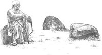
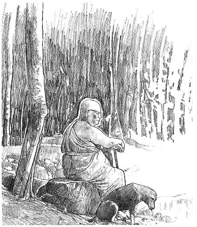
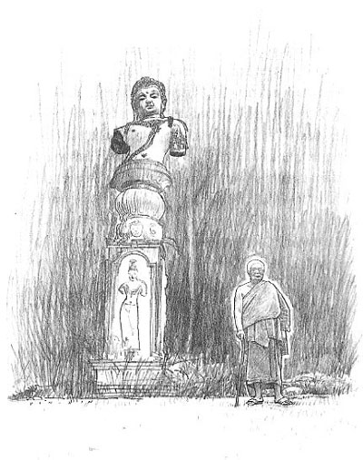
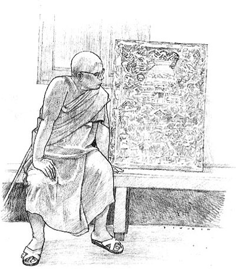
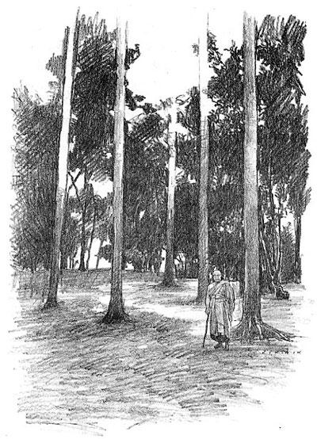
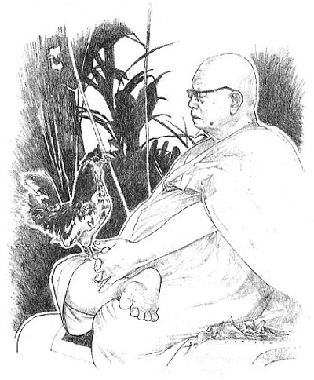

|

ภาค ๑ ธรรมะจากมุมมองของผู้ใกล้ชิด
ภาค ๒ รวมธรรมจากคำบอกเล่า
ภาค ๑ ธรรมะจากมุมมองของผู้ใกล้ชิด พระครูภาวนาชัยคุณ
(โพธิ์ จันทสโร)
 พระครูภาวนาชัยคุณหรือที่เรียกกันโดยทั่วไปว่า ท่านอาจารย์โพธิ์ เป็นบุคคลสำคัญท่านหนึ่ง ที่มีความใกล้ชิดกับท่านอาจารย์พุทธทาสมานานถึง ๓๐ ปี เป็นผู้รับใช้สนองงานในหลายด้าน ทั้งงานก่อสร้างโรงมหรสพวิญญาณ สวนโมกข์นานาชาติ ธรรมมาตา การจัดอบรมสมาธิภาวนาแก่ชาวต่างประเทศ จนกระทั่งท่านอาจารย์พุทธทาสมอบหมายหน้าที่ให้เป็นเจ้าอาวาสหรือพระอธิการดูแลสวนโมกข์ ซึ่งที่มีชื่อในทางการว่า วัดธารน้ำไหล และเป็นผู้รับผิดชอบดูแลจัดการสรีระของท่านอาจารย์เมื่อมรณภาพให้เป็นไปตามพินัยกรรมของท่านด้วย ในฐานะของผู้ใกล้ชิด ท่านอาจารย์โพธิ์ได้เรียนรู้ธรรมะจากท่านอาจารย์พุทธทาสหลายประการ ซึ่งท่านได้เล่าสรุปไว้เป็นข้อ ๆ อย่างน่าสนใจ "ท่านอาจารย์จะสอนเสมอว่า ให้เป็นคนรอบคอบ ท่านบอกว่า ทำอะไรก็ตามต้องรอบคอบ แม้แต่กวาดขยะก็ต้องกวาดให้รอบคอบที่สุด ไม่สะเพร่า โดยบอกว่า ถ้าเราทำสิ่งเล็ก ๆ น้อย ๆ ยังสะเพร่า ต่อไปจะสะเพร่ากับสิ่งที่ใหญ่ เราจะกลายเป็นคนประมาท ครั้งหนึ่งท่านอาจารย์ทดลองอาตมา โดยบอกว่า ให้ไปสำรวจเสื่อที่มีอยู่ในวัดให้หมด ตอนนั้นอาตมาเห็นว่าเป็นเรื่องเล็กน้อย จะไปสำรวจทำไม เพราะต้องไปตรวจเสื่อตามกุฏิที่ไหนต่อไหน อาตมาตอนนั้นยังหนุ่มอยู่ ก็ปฏิเสธบอกท่านอาจารย์ว่าทำไม่ได้ ท่านก็บอกเลิก ว่าทำไม่ได้ก็หยุดไว้ก่อน ไม่ต้องทำ จนกระทั่งค่ำลง อาตมาเดินมาหาท่านอาจารย์ ท่านบอกว่า ที่เราให้เธอทำอย่างนี้นั้น ไม่ได้ต้องการให้เธอเพียงสำรวจอย่างนี้ แต่เพื่อต้องการให้เรียนรู้ความรอบคอบ อาตมาจึงเข้าใจ ตอนหลังก็พยายามทำ ท่านอาจารย์ยังสอนให้เราใช้ความคิดให้รอบคอบด้วย ยกตัวอย่างว่า ตอนนั้นอาตมาไปรับผิดชอบงานช่างที่สวนโมกข์นานาชาติ ในการไปสร้างธรรมมาตา ซึ่งตั้งอยู่ในที่ปัจจุบันนี้ มันเป็นที่ลุ่มซึ่งน้ำท่วมทุกปี ท่านอาจารย์ก็สั่งว่าจะต้องทำอย่างนั้น ๆ ตรงนั้น ๆ เช่นว่าสร้างส้วมจะต้องทำที่ตรงนั้น ๆ ตอนแรกก่อนที่จะสร้าง อาตมาบอกท่านว่า มันทำยาก ทำไม่ได้ เพราะน้ำท่วม ท่านอาจารย์บอกว่า "ถ้ามีปัญญา ทำได้" ท่านบอกเท่านี้ บอกแค่ว่าถ้ามีปัญญาทำได้ นั่นก็คือต้องใช้ความคิดตลอดเวลา คิดให้หลาย ๆ ครั้ง ท่านอาจารย์บอกว่า เกิดเรื่องอะไรขึ้น ให้คิดอย่างน้อยต้องร้อยครั้ง ถึงคิดว่าถูกแล้ว ถูกแล้ว ก็ให้หยุดไว้ก่อนแล้วคิดใหม่ ถูกแล้ว ถูกแล้ว หยุดไว้ก่อน แล้วคิดใหม่อีก ท่านเป็นผู้ที่คิดละเอียดรอบคอบมาก" "อาตมาเห็นคุณธรรมของท่านอาจารย์ ก็พยายามเรียนรู้และปฏิบัติตาม เรื่องหนึ่งที่พระเดชพระคุณท่านอาจารย์มีสูงสุดคือเรื่อง ความกตัญญูกตเวที ท่านจะเตือนหลังฉันเช้าที่โรงฉันบ่อย ๆ ว่า คดสั้น อกตัญญูเสื่อม ท่านเองก็ทำให้เราเห็นเป็นตัวอย่างในเรื่องความกตัญญู เช่นว่าสมัยก่อนท่านจะออกมาเดินรอบ ๆ วัด แล้วก็ให้คนตัดต้นไม้บางมุม เพื่อจะได้มองเห็นเขาประสงค์ ซึ่งเป็นที่เก็บอัฐิของโยมพ่อโยมแม่ของท่านอาจารย์ ท่านมักจะมายืนดู และบอกว่าเมื่อเห็นเขาประสงค์ทีไร ก็ทำให้นึกถึงโยมของท่าน จนกระทั่งท่านอาจารย์มรณภาพ ท่านก็ยังสั่งให้เอาเถ้าถ่านกระดูกส่วนหนึ่งของท่านไปเก็บที่เขาประสงค์ด้วย" "ท่านอาจารย์เป็นคนที่เรียกว่า ไม่ทิ้งเราในยามยาก อาตมาเชื่อว่าที่ตนเองอยู่สวนโมกข์ได้ เพราะท่านอาจารย์ไม่ทิ้งกันในยามยากหรือยามเรามีทุกข์ อาตมาเป็นทุกข์หนักครั้งหนึ่งในชีวิตหลังบวชเป็นพระ คือก่อนมาอยู่สวนโมกข์นั้น อาตมาอยู่เกาะสมุยมา ๑๐ ปี เรียกว่าสบายตลอดเวลา ไม่ได้รับผิดชอบอะไร เพราะเป็นพระป่า อยู่ถ้ำอยู่เขาคนเดียวไม่มีปัญหาอะไร มีความสุขมาก มาอยู่สวนโมกข์ตอนแรก ก็ตั้งใจมาช่วยงานท่านเพียง ๓ เดือนเท่านั้น แต่เมื่อมาเห็นความเสียสละ และคุณธรรมอะไร ๆ ทุกอย่างของท่านอาจารย์ ก็เลยอยู่เรื่อย ๆ มา ครั้งที่อาตมาเป็นทุกข์มาก คืออิฐที่เอามาก่อสร้างโรงหนังและธรรมนาวานั้น คุณภาพไม่ดี อาตมาบอกท่านอาจารย์ว่าอิฐที่มีคุณภาพดีมีอยู่ที่ขนอม ท่านก็เลยให้อาตมาไปเอามาจากที่นั่น ไปขนเอาอิฐมาทางเรือ ขนทีได้เป็นหมื่นก้อน ตั้งใจว่าจะเอาล่องมาทางคลองพุมเรียง ปกติใช้เวลาเพียงวันเดียวเท่านั้น อาตมาไปติดต่อเรือตังเก บอกเขาให้ช่วยลากจูงเรือลำที่ขนอิฐนี้ให้สักวันเดียวเท่านั้นแล้วก็จะกลับ ทีนี้ระหว่างเดินทางมา เรือบังเอิญเดินผิดร่อง ลำที่บรรทุกอิฐหนักขึ้นไปติดสันดอน ส่วนเรือลำที่จูงผ่านพ้นได้ แทนที่เขาจะได้กลับวันนั้น ก็กลับไม่ได้ อาหารเสบียงอะไรต่าง ๆ ก็ไม่ได้เตรียมมาในเรือเลย มีแต่ข้าว ในที่สุดเรือติด ไม่รู้จะทำอย่างไร ลูกเรือก็โมโห มีคนแก่เป็นคนจีนคนหนึ่ง พวกลูกน้องพวกนี้ก็ด่า ด่าคล้ายกับด่ากระทบเราด้วย อาตมาก็นั่งทน ทนอย่างนั้น จนกระทั่งถึงเวลาหุงข้าวที่จะกิน ก็ไม่มีอะไรเลย มีแต่ข้าวเปล่า ๆ ในที่สุดคนเหล่านั้นก็ลงไปหาปู สมัยนั้นคลองพุมเรียงมีปูเต็มหมดเลย เขาก็ไปจับปูมาต้ม แล้วเอามาถวาย อาตมาไม่ฉันเลย เพราะเราเห็นอยู่ว่าปูคลานเต็มไปหมดแล้วเขาก็ไปจับมาต้ม เราก็ไม่ฉัน ฉันข้าวเปล่า คิดว่าไม่นานคงจะได้ออก พอค่ำลงน้ำลด เรือติดอีกออกไม่ได้ ติดอยู่ ๒ คืน อาตมาหนักใจมาก เป็นทุกข์มาก ไม่รู้จะทำอย่างไร เจ้าของเรือเขาก็ต่อว่าว่า ไหนจะพามาเพียงวันเดียวเท่านั้น ทำไมมาติดตั้ง ๒ วัน เขาเสียหายมาก อาตมาก็ไม่รู้ว่าจะทำอย่างไร ก็มาหาท่านอาจารย์ ท่านพาพระในวัดไปทั้งหมด เอารถไถ รถที่มันวิ่งได้ไปด้วย ไปกันทั้งหมดวัดเลยเพื่อที่จะขนอิฐ ถ่ายจากเรือลำใหญ่มาสู่เรือลำเล็กแล้วก็ล่องขึ้นมา ท่านอาจารย์ไปนอนตากยุงอยู่ที่พลับพลา ซึ่งยุงชุมเหลือเกิน เพราะแถวนั้นพอค่ำลงยุงจะชุมเต็มไปหมดเลย กัดทั้งพระทั้งใครต่อใคร ลำบากกันมาก ในเหตุการณ์อย่างนั้น เวลาอย่างนั้น ถ้าท่านอาจารย์จะบ่นว่าโง่ ว่าเราไม่ฉลาดก็ได้ แต่ท่านไม่พูดเลย ทั้ง ๆ ที่แต่ก่อนในเวลาปกติ ท่านบอกเสมอว่า เรายังโง่มาก ยังบกพร่อง ยังทำอะไรไม่ดี อยู่กับท่านเป็นปี ๆ อาตมาได้รับแต่คำกล่าวอย่างนี้ คำยอจากท่านอาจารย์ไม่มีเลย ไม่มีเลยที่จะได้ยินท่านบอกว่าคุณทำดีแล้ว ถูกต้องแล้ว ไม่มี ไม่เคยได้ยินเลย แต่ในเวลาอย่างนั้น ไม่มีเลยที่ท่านอาจารย์จะพูดว่า คุณทำผิด ทำสะเพร่า ไม่มีเลย อาตมาจึงเห็นน้ำใจของท่านอาจารย์ ว่ายามยาก ยามเป็นทุกข์อย่างนี้ ท่านอาจารย์จะไม่ทอดทิ้งเราเลย" "อยู่กับท่านอาจารย์เราได้เรียนรู้ความอดทนของท่าน ว่าท่านมีขันติสูงมาก ไม่ว่าจะเป็นตอนที่ท่านไปพูดที่กรุงเทพฯ ไปอภิปรายกับ ม.ร.ว.คึกฤทธิ์ (ปราโมช) หรือที่ถูกใครต่อใครรุมกันด่า ชวนกันทั้งด่าและเขียนโจมตีท่านอย่างรุนแรง ทั้งเรื่องพระอภิธรรมหรือเรื่องอะไรต่ออะไรมากมาย แต่ท่านอาจารย์เฉย ท่านเคยพูดให้อาตมาฟังว่า หมาเห่าตีนช้าง หมายความว่า หมาหลายตัวรุมกันเห่าจะกัดตีนช้าง ถ้าช้างเตะทีเดียวก็กระเด็นกันไปหมด ท่านพูดอย่างนั้น ท่านใช้ทั้งความอดทนและสติปัญญา โดยบอกว่า เราต้องมีความคิดอิสระ แต่ความคิดอิสระนี้ไม่ได้หมายความว่า เราจะไม่ฟังความคิดของคนอื่น ท่านบอกว่า เราต้องฟังความคิดของทุกคนเสียก่อน ฟังอย่างตั้งใจ อย่างไตร่ตรอง เพราะถ้าเราไม่ตั้งใจฟังที่เขาพูด เราเองจะพูดให้ถูกต้องไม่ได้ เพราะฉะนั้นเวลาพระพูดหรือใครพูด ท่านอาจารย์จึงมักจะมานั่งฟังด้วย ฟังว่าเขาพูดผิดหรือพูดถูกอย่างไร" "ท่านอาจารย์พุทธทาสมีหลักการทำงาน ๓ อย่าง คือให้ประหยัดที่สุด เร็วที่สุด แล้วก็ดีที่สุด อาตมาทำงานก็ถือหลักนี้ตามท่าน ตอนแรกคิดว่า ประหยัดที่สุดกับดีที่สุดมันจะขัดกัน คือถ้าเราทำให้ดีที่สุด มันก็ประหยัดไม่ได้ แต่เมื่อดูท่านแล้วก็เห็นว่า ท่านอาจารย์ก็ทำของท่านได้ เราก็เลยถือหลักปฏิบัติตลอดมาว่า ทำอะไรก็แล้วแต่ ให้ประหยัดที่สุด ดีที่สุด แล้วให้เร็วที่สุด"
พระพรเทพ
ฐิตปัญโญ
พระพรเทพ ฐิตปัญโญ บ้านเดิมอยู่จังหวัดชลบุรี รู้จักนามพุทธทาสภิกขุครั้งแรกจากหนังสือที่วัด เริ่มจากความสงสัยในการอ่านออกเสียงชื่อของท่านอาจารย์ แล้วไปสอบถามจากเจ้าอาวาสซึ่งเป็นพระอุปัชฌาย์ (พระครูสุนทรธรรมรส) ซึ่งนอกจากจะแนะนำการอ่านออกเสียงให้แล้ว ยังแนะนำอีกว่าท่านผู้เป็นเจ้าของนามดังกล่าว มีสำนักปฏิบัติธรรมอยู่ที่สวนโมกข์ อ.ไชยา จ.สุราษฎร์ธานี ต่อมาจึงมีโอกาสมาเยือนสวนโมกข์เป็นช่วง ๆ เกิดความรู้สึกพอใจและสนใจ จนกระทั่งในปี พ.ศ. ๒๕๑๘ จึงเดินทางมาอยู่แบบถาวร และมีเหตุประจวบเหมาะโดยไม่ตั้งใจ ให้ได้มีโอกาสมาสนองงานใกล้ชิดท่านอาจารย์พุทธทาสในงานด้านการพิมพ์หนังสือ งานเลขานุการ งานจัดการด้านอื่น ๆ ของท่านอาจารย์อยู่เป็นเวลาประมาณ ๑๘ ปี ในฐานะเลขานุการส่วนตัว จนกระทั่งพระอาจารย์พุทธทาสมรณภาพในปี พ.ศ. ๒๕๓๖ "อาตมามีโอกาสมาช่วยงานท่านอาจารย์โดยไม่ตั้งใจ คือตอนนั้นหลานชายท่านคนหนึ่ง ซึ่งมีหน้าที่ช่วยท่านอาจารย์พิมพ์ต้นฉบับหนังสือ เขาขี้เกียจพิมพ์แล้วก็ไม่ว่างด้วย เขาก็เที่ยวเดินหาคนที่พิมพ์ดีดเป็น พอดีอาตมานั้น ตอนที่บวชใหม่ ๆ เคยหัดพิมพ์ดีด จึงพอพิมพ์เป็นบ้าง เขาก็เลยชวนให้มาช่วยพิมพ์ เราก็เลยได้เริ่มงานพิมพ์ต้นฉบับของท่านอาจารย์ ตอนแรกท่านอาจารย์ก็ไม่รู้ว่าอาตมาเป็นคนพิมพ์ เพราะหลานของท่านไม่บอก แล้วยังบอกเราว่าบอกใครไม่ได้นะ เดี๋ยวเขาโดนหลวงลุงด่าว่าขี้เกียจ เราก็พิมพ์ไปเรื่อย ๆ ตอนนั้นอาตมาทำงาน ๒ แห่ง คือทำที่โรงปั้นกับหลวงตาไสวด้วย ตอนหลังหลานท่านคนนั้น เขายังไงไม่รู้ ไม่อยากพิมพ์เอาเลย อาตมาจึงได้รับหน้าที่พิมพ์เต็มตัว มาพิมพ์งานอยู่กับมหาวิจิตร (ปัจจุบันสึกไปแล้ว) ที่กุฏิซึ่งอยู่ข้าง ๆ กุฏิท่านอาจารย์ มหาวิจิตรก็มาเรียนท่านอาจารย์ว่า อาตมาเป็นผู้พิมพ์ ท่านก็เลยขอดูตัว เพราะว่าเราพิมพ์งานด้วยความตั้งใจมาก แล้วเสียงเครื่องพิมพ์มันดังมากจากกุฏิที่พิมพ์ ดังจนท่านก็ยังได้ยิน พอมาพบท่าน ท่านอาจารย์ก็ถามอะไรนิด ๆ หน่อย ๆ เช่นมาจากไหน มาทำอะไร อย่างนี้ เราก็บอกท่านว่า สอบนักธรรมเอกได้แล้ว ท่านก็ว่า เออ ๆ ดี ก็มาอยู่ช่วยกันพิมพ์ไป จำได้ว่าท่านพูดให้ข้อคิดอยู่เรื่องหนึ่งว่า เราทำงานเผยแผ่ช่วยคนให้พ้นทุกข์ ดังนั้น ผู้ทำอย่าเป็นทุกข์เสียเอง ท่านเตือนไว้ว่าให้ทำให้ดี อาตมาก็เลยทำงานพิมพ์มาเรื่อย ๆ เคยขอยางลบจากท่านเหมือนกัน ท่านก็บอกว่าตั้งแต่พิมพ์ดีดมานี่ ไม่เคยใช้ยางลบเลย อาตมาก็ถามว่า แล้วเวลาพิมพ์ผิดทำอย่างไร ท่านแนะว่าคุณหาอะไรแหลม ๆ แล้วก็เขี่ยมันออก อาตมาก็ไปขอได้เข็มหรือเข็มซ่อนปลายมา เวลาพิมพ์ตัวไหนผิด ก็ค่อย ๆ เขี่ยตัวนั้นออกแล้วก็พิมพ์ใหม่ งานต้นฉบับที่พิมพ์ก็มี "ปฏิจจสมุปบาทจากพระโอษฐ์" "พุทธประวัติจากพระโอษฐ์" ก็ไม่ได้ใช้ยางลบเลย งานเสร็จได้รับรางวัลจากท่าน เป็นหนังสือที่พิมพ์เสร็จแล้วเล่มหนึ่ง ท่านก็เขียนไว้ว่า ให้เป็นที่ระลึกจากหยาดเหงื่อแรงงานของคุณ เราก็เอามาเก็บ ท่านไม่ได้ให้อะไรมากกว่านั้น ประมาณ ปี ๒๕๑๙ ก็ทำงานใกล้ชิดกับท่านมากขึ้นเรื่อย ๆ ท่านอาจารย์ก็เลยเปิดออฟฟิศให้ในห้องโกดัง ออฟฟิศขนาดประมาณ ๑ ตารางเมตร อยู่ในซอกของตู้เหล็ก ท่านให้ปัดกวาดสักหน่อย แล้วก็เอาโต๊ะเหล็กมาตั้ง มีเก้าอี้ตัว เครื่องพิมพ์ดีดอีกเครื่อง พอถึงเวลาจะพิมพ์อะไรท่านก็ส่งให้เรา เราก็พิมพ์แล้วก็ส่งให้ท่านดูตลอดเวลา ทำงานกับท่านได้ความรู้พิเศษอย่างหนึ่ง คือเรื่องเครื่องหมายวรรคตอนหรือการเว้นวรรค ท่านบอกว่า มันเป็นเรื่องสำคัญ ขณะที่เราเว้นวรรคแล้ว มันอาจไม่ชัดเจน ต้องใส่เครื่องจุลภาค คือ คอมมา หรือเครื่องหมายโคลอน เซมิ โคลอน ท่านก็บอกเราเรื่อยนะ อย่างนี้ต้องใส่ ให้ใส่อย่างนี้ ตอนแรกเราก็ไม่รู้เรื่อง แต่พยายามจะทำและใส่ ต่อมาทางคุณอรุณวตี (สวนอุศม) ก็รับไปใส่เครื่องหมาย มันยากมากเลย หนังสือสมัยก่อนออกช้ามาก โดยเฉพาะหนังสือชุดปกดำ เพราะท่านอาจารย์ต้องอ่านตรวจให้หมดก่อนพิมพ์ ก็เลยมีหนังสือมาคอยอยู่กับท่านเป็นปึกเลย เมื่อท่านอายุมากขึ้น ทำงานช้าลง ผลสุดท้ายก็เลยโอนให้มหาวิจิตรทำ มหาวิจิตรก็เอามาอ่านกับอาตมา อ่านแล้วก็มาตรวจคำผิดกัน เสร็จแล้วส่งโรงพิมพ์เลย งานหนังสือรุ่นหลัง ๆ ก็เลยไม่ผ่านท่านอาจารย์อีก ก็เลยมีโอกาสที่อาจจะผิดพลาดบ้าง แต่ท่านก็ถือว่าเอาเทปเป็นเกณฑ์ เพราะเทปยังอยู่" "ประมาณปี ๒๕๒๗ มีคนเอาเครื่องเล่นวีดีโอมาถวาย เขาตั้งใจว่า อยากให้ท่านอาจารย์ได้ดูอะไรที่ควรจะดู เช่น สารคดีชีวิตสัตว์ โดยเขาอัดรายการจากในทีวีเอามาถวายให้ดู เป็นสารคดีชุด Singer World มีชีวิตสัตว์ต่าง ๆ ทั้งเสือ ลิง จระเข้ มากมาย ท่านอาจารย์ดูอยู่หลายสิบม้วน แล้วท่านก็เทศน์ออกมาเป็นเรื่องสัญชาตญาณ เป็นหนังสือปกดำชุดหนึ่งเกี่ยวกับเรื่องสัญชาตญาณ ส่วนพวกหนังเรื่องนั้น ท่านอาจารย์ดูไม่เป็น ท่านดูหนังไม่รู้เรื่อง เพราะว่าหนังเป็นมายา เป็นสิ่งที่สร้างขึ้น ทำเรื่องราวให้สั้นเข้า มีคนเอาหนังเรื่องมาฉายให้ท่านดูเรื่องหนึ่ง คนอื่น ๆ ดูกำลังเพลิน หนังกำลังเข้าเรื่อง ท่านอาจารย์บอกว่าดูไม่รู้เรื่อง คือท่านไม่คุ้นเคยกับวิธีการของหนัง ท่านดูไม่รู้เรื่องเลย ไม่รู้ว่า ตัวไหนเป็นตัวเอก หรือตัวอะไร แล้วคำพูดที่เจรจากัน ท่านไม่ชอบ ท่านบอกว่า มันไม่ถูก แล้วไม่จำเป็นต้องมาพูดอย่างนี้ด้วย ผลสุดท้ายเลยต้องปิด ต่อมาก็มีละครธรรมะส่งเสริมศีลธรรม เรื่องทิวาราตรี ซึ่งเป็นข้อคิดเรื่องของหนุ่มสาวคู่หนึ่ง ก่อนฉายมีการตรวจเซ็นเซอร์กันเรียบร้อยแล้ว บทที่ไม่เหมาะสมก็ถูกตัดออกหมด เพราะเรารู้ใช่ไหมว่า ฉากรักใคร่ฉายไม่ได้ แล้วก็นัดพระมาดูกัน ก็มากันเต็มเลย ท่านอาจารย์ก็นั่งดูด้วย ละครเริ่มต้นตั้งแต่ชีวิตนักศึกษา พอไปถึงตอนที่นักศึกษาไปออกค่าย มีแคมป์นั่งรอบกองไฟ ตบมือร้องเพลง พอถึงตรงนั้น ท่านสั่งหยุดเลย บอกว่าต่อไปนี้ ไม่ต้องเอามาฉายอีก ตั้งแต่นั้นมาเลยไม่ได้ฉายวีดีโออีกเลย เราบอกท่านว่า ท่านอาจารย์ครับ หนังกำลังจะถึงจุดดีมีสาระแล้ว แต่ท่านบอกไม่เอาแล้ว เท่านี้พอแล้ว ศีลธรรมเสื่อมหมดแล้ว คือละครมันไปดีเอาตอนหลัง ตอนมีการเสียสละอะไร แต่ก่อนหน้านั้นมันเป็นเรื่องชีวิตโลก ๆ ต่อมาเอาใหม่ คราวนี้เขาเอาหนังชั้นหนึ่งของโลก เรื่อง คานธี มาฉาย คราวนี้ไม่ถูกสั่งปิด เพราะเป็นหนังสาระ แต่ก็มีฉากที่ท่านบอกว่าไม่น่าจะเอามาใส่ไว้ คือฉากตอนที่คานธีกับภรรยาลากันและก็มีการกอดกัน ท่านบอกว่าเอามาใส่ทำไม มันไม่จำเป็น มันไม่เกี่ยวกับสันติภาพเลย แล้วก็มีอีกเรื่องหนึ่ง คือเทวดาท่าจะบ๊องส์ เรื่องนี้เซ็นเซอร์ก่อน ตัดหมดเลย เหลือแต่ตอนขวดตกลงมา แล้วตัวเอกเอาขวดไปทิ้ง ฉากยิงกัน หรือที่ไม่เหมาะสมตัดทิ้งหมดเลย ฉายให้ท่านดูปรากฏว่าผ่าน เพราะว่าเราตัดเสียหมด ถ้าไม่ตัดท่านก็คงจะดูไม่จบอีก คือ ท่านอาจารย์จะมองอะไรไม่เหมือนเรา สมัยอาตมามาอยู่ใหม่ ๆ เขาเอาสบู่หอม สบู่ลักซ์ สบู่ปาล์มโอลีฟมาถวาย ท่านบอกว่าพระไม่ควรใช้ สบู่หอมเอาไว้ให้ชาวบ้านใช้ พระต้องใช้สบู่ซักผ้าซันไลท์ ฟอกตัวถูขี้ไคล ซักสบงในตัวเสร็จ เรียบร้อยดี ถ้าใช้สบู่หอมแล้วมันจะบ้ากาม พวกบ้ากามใช้สบู่หอม แต่เดี๋ยวนี้ห้ามยาก เพราะมากี่โหลก็หอมหมด (หัวเราะ) ผลสุดท้าย พระก็เลยพลอยแย่ไปด้วย อีกครั้งหนึ่ง เคยมีคนเอาหนัง ชาลี แชปลิน ตอนดี ๆ มาฉายให้ท่านดู บอกว่าเป็นหนังดีมีสาระ ท่านดูแล้วบอกว่าไร้สาระ เสียเวลา ปิด ตกลงเลยไม่ได้ดู สรุปท่านดูอยู่อย่างเดียว คือชีวิตสัตว์ นอกนั้นไม่ดูเลย ยิ่งหนังโฆษณาสินค้านั้นท่านดูไม่ได้เลย ตอนเกิดสงครามอิรักมีคนเอาโทรทัศน์มาเปิดให้ท่านดูข่าวนี้ ท่านดูอยู่หน่อยก็ไม่ดูอีก เพราะมันมีโฆษณาคั่นข่าว ท่านบอกว่าโฆษณามันเลวร้ายมาก เอาผู้หญิงมาแต่งตัวนุ่งสั้น ทำหน้าทำตาแบบนั้น ท่านสั่งปิดเลย บอกว่ามันทุเรศ ท่านจึงรู้ข่าวสารจากวิทยุและหนังสือพิมพ์มากกว่าสื่ออย่างอื่น เปิดฟังข่าววิทยุ ท่านก็จะให้เปิดเฉพาะที่เป็นข่าวจริง ๆ ไม่ให้มีโฆษณาออกมาด้วย คนทำหน้าที่เปิดจะต้องระวังมากเลย" "ท่านอาจารย์เป็นคนที่เอื้อเฟื้อมาก แต่จะเอื้อเฟื้อโดยไม่บอก เช่นอาหารที่ท่านฉันนั้น ปกติท่านฉันเสร็จเราจะรับมาฉันต่อ เราสังเกตเห็นเลยว่า ท่านตั้งใจเหลือเผื่อถึงเรา เพราะท่านทราบแน่ว่าอาหารอะไรดี แต่ท่านไม่ฉัน หรือฉันนิดเดียว ทั้ง ๆ ที่บางอย่างมีไม่มาก ไม่ควรเหลือถึงเรา แต่ก็เหลือทุกครั้ง ท่านไม่เคยฉันอะไรหมด จะต้องมีเหลือทุกครั้ง แต่ท่านไม่บอกว่า เราเหลือให้เธอนะ เพื่อเอาบุญคุณ ท่านอาจารย์ไม่เคยทำอย่างนั้นเลยในทุกเรื่อง อาหารที่เราจะอดก็คืออาหารที่ดีเกินไป เพราะท่านจะเอาให้หมากิน ท่านบอกว่าถ้ามันดีนัก ก็ให้หมามันกินดีกว่า ท่านคงจะกลัวว่าพระจะเสียนิสัย ของกินที่ดีเกินไป อย่างช็อกโกแลต ท่านบอกว่าของอย่างนี้พระไม่ควรฉัน บอกให้เก็บเอาไว้ให้เด็ก ๆ ที่มาวัด ท่านคงเกรงว่าพระฉันของดีมาก ถ้าไม่ระวังรักษาจิต ก็จะเพลินไปกับความอร่อย ท่านอาจารย์จะเป็นตัวอย่างที่ดีมากในเรื่องนี้ คือไม่ว่าอาหารการกินจะเปลี่ยนแปลงไปอย่างไร สะดวกสบายขึ้นยังไง มีของขบฉันมากขึ้นแค่ไหน ท่านอาจารย์ก็ยังฉันแบบเดิม เท่าเดิม ไม่ใช่ว่าของอร่อยของดีก็ฉันมาก ลักษณะการฉันของท่านเราจะดูไม่ออกเลยว่า อร่อยหรือไม่อร่อย เพราะท่าทางของท่านเหมือนเดิมทุกวัน ของอย่างอื่น เช่น ไดอารี่ ถ้าท่านมีหลายเล่ม ท่านก็ให้เราตามโอกาส มีก็ให้ ไม่มีก็ไม่ให้ ไม่ใช่ว่า ไม่มีแล้วซื้อมาให้ อย่างปากกาถ้าเขาถวายมาหลาย ๆ ด้าม ท่านก็เอาไว้ด้ามหนึ่ง นาฬิกาก็เหมือนกัน ถ้ามีหลาย ๆ เรือน ท่านได้มาท่านก็ให้ เคยสังเกตเหมือนกันว่า ท่านจะให้ของเราตอนไหน อย่างไร เพราะบางทีเราก็ไปแอบดูว่า ใครถวายอะไร ไปจ้องไว้ พอถวายปุ๊บ เราก็ไปเดินดู เอ๊ะ! ท่านไม่ให้ (หัวเราะ) นี่เป็นเครื่องวัดว่า ท่านไม่ได้ให้เพราะว่า เห็นเราแล้วต้องให้ เพราะกลัวว่า เดี๋ยวจะถูกหาว่า ทำไมมีของเกินจำเป็นอะไรอย่างนี้ เหมือนที่เราให้คนอื่นเพราะความจำเป็น เหตุการณ์บังคับถึงต้องให้ แต่ท่านไม่ใช่อย่างนั้น" "มีเรื่องหนึ่งที่คนใกล้ชิดทุกคนจะเห็นเหมือนกันหมด ก็คือว่าท่านอาจารย์ไม่เคยพูดเล่น อาตมาอยู่กับท่านมาเป็นสิบปี ไม่เคยเห็นท่านพูดเล่น ที่พูดแล้วคนหัวเราะ ส่วนใหญ่จะหัวเราะกันไปเองนะ ท่านพูดไม่ขำ คนฟังขำเอง อย่างท่านด่าไอ้ชาติโง่ คนก็หัวเราะแล้ว คือมันสะใจดี คนก็ขำในความสะใจนั้น ไม่ได้ขำว่ามันเป็นเรื่องตลก ที่ท่านอาจารย์จะชวนคุยเรื่องไร้สาระสักอย่างไม่มีเลย เช่น จะคุยว่าวันนี้พระจันทร์สวยนะ อะไรอย่างนี้ไม่มี พูดอะไรเกี่ยวกับผู้หญิงก็ไม่มี ครั้งหนึ่ง อาตมาเดินตามหลังท่านอาจารย์ช่วงที่ท่านเดินออกกำลังกายตอนเช้า ก็เดินตามท่านไป แล้วก็คุยกันไปกับพระที่เดินไปด้วยกัน ไม่ได้คิดว่าท่านจะสนใจ วันนั้นเราคุยกันเรื่องที่เกิดคดีชาวบ้านฆ่ากันตายในละแวกนั้น ก็คุยกันเป็นเรื่องเป็นราวเอาจริงเอาจังไปตลอดทางที่เดินตามท่าน พอถึงช่วงหยุดเดิน ท่านอาจารย์ก็ปรารภขึ้นมาลอย ๆ ว่า "ถ้าคนสมัยนี้คุยกันเรื่องพระพุทธเจ้าอย่างเอาจริงเอาจังบ้าง โลกก็คงจะดีขึ้นกว่านี้!" ทำเรารู้สึกอายมาก ทั้ง ๆ ที่ท่านไม่ได้ดุว่าอะไรเลย แต่คำพูดของท่านมันสอนเราอย่างแรงเลย ดังนั้น เรื่องที่ท่านอาจารย์จะคุยด้วยโดยปกติ คือท่านจะถามว่า เดี๋ยวนี้คุณศึกษาเรื่องอะไร คุณอ่านเรื่องอะไรอยู่ ท่านจะถามอะไรทำนองนี้ อาตมาถูกท่านถามอย่างนี้ บางทีไม่รู้จะตอบอย่างไร คือเราไม่ได้ศึกษา ท่านก็จะบอกว่า อย่าประมาทนะ คุณต้องอ่านไว้ และอย่าทิ้งนวโกวาท นักธรรมตรี โท เอก คุณต้องเย็บเป็นเล่ม หมั่นอ่าน ของท่านอาจารย์เอง ท่านเย็บเป็นเล่มเลย นักธรรมตรี โท เอก ท่านบอกว่าผมไม่เคยทิ้ง ไม่ใช่ว่าเราเรียนผ่านแล้ว รู้แล้วก็ทิ้ง มันไม่ได้ ท่านไม่เคยทิ้งเลย อย่างปาฏิโมกข์นี่ท่านก็จำได้หมด ท่านเคยมานั่งท่องให้ฟังและเคยสอนการสวดที่ถูกต้องให้ด้วย" "เวลาที่ท่านทำงานหนังสือกับมหาวิจิตรนั้น คนที่ไม่รู้เรื่องมาก่อนเห็นแล้วอาจตกใจ เพราะเถียงกันประจำ มหาวิจิตรมีหน้าที่ค้นพระบาลีมาถวายตามที่ท่านสั่ง ซึ่งมหาวิจิตรจะเก่งมาก ขนาดคอมพิวเตอร์ทำอะไรไม่ได้ เพราะสามารถค้นไม่ใช่เฉพาะคำที่ต้องการ แต่รวมถึงคำที่มีความหมายใกล้เคียงในพระไตรปิฎกด้วย บางครั้งมหาวิจิตรแปลงานแล้วเอาให้ท่านอาจารย์ดู ท่านบอกว่าแปลแบบนี้ไม่ได้ แต่มหาวิจิตรเถียงว่าได้ ก็เถียงกับท่านดังมาก ขนาดโยมมาเห็นแล้วมาบอกเราว่าให้เลิกได้ไหม กลัวท่านอาจารย์เส้นโลหิตในสมองแตก คือเขาคิดว่าท่านอาจารย์โกรธ เพราะท่านว่าไอ้โง่ ๆ เสียงดังมาก แต่เราอยู่ใกล้จะสังเกตรู้ว่าท่านไม่ได้โมโห เพราะตอนที่เถียง ๆ กันนั้น บางทีมีแขกมา ท่านก็ลุกไปคุยกับแขก แบบเฉยเลย เหมือนไม่มีอะไรเลย คุยกับแขกตั้งนาน กลับมานั่งทำงานต่อ ท่านก็บอกไอ้โง่อีกละ บอกว่าเธอทำไมไม่ทำอย่างนี้ ๆ มหาวิจิตรเองก็รู้ว่าท่านสอน เลยไม่เคยโกรธอะไรเลย ใจเย็นมาก การทำงานหนังสือนั้น ตามปกติท่านอาจารย์จะพูด มหาวิจิตรจด อาตมาพิมพ์ แล้วมาให้ท่านตรวจปรู๊ฟก่อนจะให้โรงพิมพ์เอาไปพิมพ์ เวลาที่เถียงกันแล้วตกลงกันไม่ได้ ท่านอาจารย์ก็จะบอกมหาวิจิตรว่าตามใจคุณ ของผมจะเอาอย่างนี้ แล้วท่านก็จดเอง มหาวิจิตรก็จะจดตาม แต่ขอเถียงก่อน (หัวเราะ) ท่านอาจารย์ท่านไม่บังคับใครให้ตาม แล้วก็ฟังเราด้วย เพราะบางครั้งเราเรียนท่านว่า น่าจะใช้คำอย่างนี้ ๆ ซึ่งถ้าได้ ท่านก็บอกว่าเอาเลย ๆ" "อาตมาฟังเขาเล่ากันว่า สมัยก่อนถ้าท่านอาจารย์เรียกใครแล้ว คนนั้นต้องมาให้ทัน ถ้ามาไม่ทันก็โดนไม้เท้า เพราะถือว่าละเลยหน้าที่ ท่านเป็นคนที่มีหลักเกณฑ์ในการใช้งาน เมื่อท่านมอบให้ใครทำหน้าที่อะไรแล้ว คนนั้นต้องรู้หน้าที่ และทำหน้าที่ของตนให้ดี ท่านจะไม่ใช้สลับหน้าที่ด้วย เช่น อาตมามีหน้าที่เกี่ยวกับหนังสือ ตอบจดหมาย ดูแลเอกสาร ส่วนเรื่องถวายอาหารจะเป็นหน้าที่ของท่านสิงห์ทอง เรื่องทำบุญก็เป็นหน้าที่ของท่านจ้อย (พระมณเฑียร มัณฑิโร) เวลามีอาหารใส่ปิ่นโตมา ท่านจะไม่ถามเรา จะถามท่านสิงห์ทองว่า ใครเอาปิ่นโตนี้มา ถ้าไม่รู้ก็ต้องโดนท่านว่าไปตามเรื่อง ท่านจะไม่โทษคนอื่น หรือถ้าเป็นจดหมาย ธนาณัติ อะไรอย่างนี้ก็จะถามอาตมา คือท่านจะแบ่งงานและใช้งานไม่ปนกัน ขนาดเราเดินผ่านท่านอาจารย์ ท่านหิวน้ำ เรียกหาท่านสิงห์ทอง เราบอกไม่อยู่ครับ อยู่ทางโน้น ท่านก็ไม่ใช้เราแทน นอกจากเราถามท่านว่า ท่านอาจารย์ต้องการอะไรครับ ท่านก็จะบอกว่า เราจะเอาน้ำสักแก้ว อาตมาก็ไปเอามาถวาย ถ้าจะให้ท่านใช้เอง ท่านไม่ใช้ คือถ้าผิดหน้าที่แล้วท่านจะไม่ใช้ อาตมาอยู่กับท่านอาจารย์มา เห็นว่าเวลาท่านใช้เรา ท่านจะใช้แบบวิธีขอร้องมาตลอด ทั้งที่ความจริงท่านไม่ต้องทำอย่างนั้นเลย เช่น ท่านจะถามว่าวันนี้คุณว่างไหม ถ้าว่าง เดี๋ยวคุณมาพิมพ์หนังสือให้ผมหน่อย อะไรอย่างนี้ ที่จะบอกว่า มานี่แล้วออกคำสั่งนั้นไม่มี แม้แต่เวลาอาพาธ ถ้าไม่เหลือวิสัยแล้ว ท่านอาจารย์จะไม่เรียกคนเลย จะเดินเหิน ฉันอะไร ทำเองทุกอย่าง ไม่มีรบกวนใคร ท่านเป็นคนที่เกรงใจคนอื่นมาก" "ท่านอาจารย์จะสัมพันธ์กับคนต่าง ๆ ด้วยความนิ่งมาก เป็นปกติคงเส้นคงวา มีบางทีที่เราคิดหรือทำอะไรได้แล้ว รู้สึกว่ามันเยี่ยมมันดีจัง น่าตื่นเต้น ก็เอาไปให้ท่านดู นึกว่าท่านจะพลอยตื่นเต้น ว่ามันดีอย่างโน้นอย่างนี้กับเรา เพราะใจเราชอบอยากให้เป็นแบบนั้นใช่ไหม แต่ท่านไม่ใช่อย่างนั้น บางที่ท่านก็บอกว่าวางไว้ก่อน หรือดูแล้วเฉย ๆ อาตมาไม่เคยเห็นท่านตื่นเต้นหรือตกใจอะไรเลย อารมณ์ท่านนิ่งมาก อาตมาได้เรียนรู้เรื่องนี้จากท่านโดยตรง ตอนที่ท่านอาจารย์อาพาธ คือช่วงนั้นมักจะมีญาติโยมมารบกวนท่านบ่อย เวลาท่านหลับพักผ่อน เราก็ไม่อยากให้ใครกวนท่าน แต่บางคนมาบอกขอกราบหน่อยไม่ได้หรือไง ดูหน่อยไม่ได้หรือไง อาตมาบอกท่านหลับอยู่ เขาก็บอกว่าขอชะโงกดูทางหน้าต่างหน่อยก็ได้ จนเราไม่รู้จะสู้กับเขายังไง บางคนมาแรงมาก จะดูท่านอาจารย์ให้ได้ กระโดดทางโน้น อ้อมทางนี้ กั้นไม่อยู่หรอก เข้าไปถึงก็ไปกราบท่านอาจารย์ก็ตื่น เราก็โกรธแทน เพราะเห็นว่าไม่ควร คนนอนหลับอยู่ ทำไมต้องไปกราบให้ตื่นด้วย แล้วก็ไม่กราบเฉย ๆ ต้องไปกราบที่ตักด้วย เราจะให้กราบข้างหลังก็ไม่ได้ บอกเดี๋ยวไม่เห็น ต้องไปกราบข้างหน้า อย่างนี้แล้วจะไม่ให้ท่านตื่นยังไงไหว พอตื่นขึ้นมา ท่านอาจารย์ก็ไม่โกรธ ไม่เคยเห็นท่านโกรธเลยนะ ท่านตื่นขึ้นมา ก็ถามว่ามีธุระอะไร เขาบอกมากราบ ท่านอาจารย์ก็บอกว่า เดี๋ยวก็ไปเที่ยวต่อทางโน้น เขาก็ออกไป เรารู้สึกว่าไม่พอใจเขามาก พอโกรธแล้วก็ได้คิดว่า เอ๊ะ! ทำไมต้องโกรธด้วย ขนาดท่านอาจารย์เป็นคนถูกปลุกแท้ ๆ ยังไม่โกรธ แล้วเราจะไปโกรธทำไม เห็นท่านอาจารย์แล้วเราก็เลยไม่โกรธ เปลี่ยนมาคิดหาวิธีใหม่ ที่จะพูดและกันไม่ให้คนมารบกวนท่าน โดยที่เราไม่ต้องโกรธเขา" "มีบางคนถามว่า ท่านอาจารย์มีวิธีการต้อนรับคนต่าง ๆ อย่างไร ปัญญาชน ชาวบ้าน คนที่มีฐานะ ถ้าให้อาตมาสรุปจากที่เห็น คิดว่าท่านจะต้อนรับใครอย่างไร ขึ้นกับบุคลิกของคนที่เข้ามาหาท่านมากกว่า ไม่ใช่เรื่องยากดีมีจน ถ้าท่าทางออกบ้า ๆ หน่อย ท่านอาจารย์ก็ไม่คุยด้วย ท่านไม่ได้ดูจากเสื้อผ้า ถึงแม้เสื้อผ้าจะเป็นส่วนหนึ่งของบุคลิก แต่จริง ๆ แล้ว ท่านอาจารย์จะดูจากการพูดจา บุคลิกท่าทาง มีผู้หญิงฐานะดีคนหนึ่ง มาสวนโมกข์ครั้งแรกมาถวายของ ถวายเงิน คราวหลังเขามาใหม่ พอมาถึง ก็ถามท่านอาจารย์ว่า จำเขาได้ไหม ท่านบอกจำไม่ได้หรอก เขาโกรธเลย เพราะคราวก่อนถวายเงินเป็นหมื่น ทำไมท่านอาจารย์จำเขาไม่ได้ เขาก็ลุกเลย แล้วไปพูดกับคนอื่นว่า ตั้งใจจะมาถวายเงินท่านสักหน่อย แต่ท่านอาจารย์จำเขาไม่ได้ เพราะฉะนั้นจะไม่ถวายแล้ว กลับดีกว่า บางคนก็มาพูดแบบไม่ได้เรื่องหรือไม่ดูความเหมาะสม อย่างท่านกำลังเดินอยู่ มาถึงมากราบ ท่านถามว่ามีธุระอะไร เขาบอกผมมีปัญหาจะถามครับ ท่านบอกไม่ใช่เวลาจะตอบปัญหา ท่านก็ไล่เลย แต่บางคนมากราบท่านคุยด้วยเลยก็มี อาตมาก็ไม่รู้ว่าทำไมท่านคุยกับคนนี้ ไม่คุยกับคนนั้น ทั้ง ๆ ที่แต่งตัวคล้าย ๆ กันนะ ครั้งที่เห็นชัดเลยก็คือ มีคนคนหนึ่ง จะมาขอจำพรรษาที่สวนโมกข์ ซึ่งธรรมดาแล้วทางนี้จะไม่รับแล้วเพราะเป็นในพรรษา ท่านอาจารย์ก็บอกไม่รับ หมดเวลาแล้ว คุณมาทำไม แล้วท่านก็ไล่ คนนั้นเขาก็เฉย แล้วพูดอะไรก็ไม่รู้ สักพักเดียวท่านอาจารย์ก็ให้อาตมาไปหากุฏิให้เขาอยู่ มันเปลี่ยนตามเหตุปัจจัย ซึ่งเราไม่รู้ว่าคืออะไร ส่วนคนที่เขามาโดยยศตำแหน่ง ก็แน่นอนว่า ต้องรับเขาตามธรรมเนียม เพราะเขามาโดยอำนาจโดยตำแหน่งใช่ไหม แต่ยกเว้นผู้หญิง มาคนเดียวเข้าไม่ได้หมด ท่านระวังเรื่องนี้ตลอด ไม่ว่ากับใคร ยิ่งเป็นวัยรุ่นด้วย ยิ่งเข้าไม่ได้เลย บางคนก็โกรธว่าทำไมเข้าคุยกับท่านไม่ได้ ถ้าเข้าไปต้องมีพระหรือมีใครอยู่ด้วย พวกนิตยสาร หนังสือพิมพ์ ถ้าส่งผู้หญิงมาสัมภาษณ์มักไม่ค่อยสำเร็จ หรือยุ่งยากหน่อย" "ท่านอาจารย์เคยสอนว่า ไม่ว่าอะไรจะเกิดขึ้น หรือมีปัญหาหนักหนาอะไรก็ตาม ให้เราถามพระพุทธเจ้าก่อน คือให้มีสติเต็มที่ ถ้ามีสติและมีปัญญาแล้ว ทุกอย่างทุกปัญหาจะแก้ไขได้ อาตมาอยู่กับท่านจำได้เลยว่า เวลาท่านให้ทำอะไรแล้วเราบอกว่าทำไม่ได้ ท่านมักจะบอกว่า อย่าเพิ่งพูด อย่าเพิ่งพูด ให้ไปลองเสียก่อน คือให้เรารู้จักคิด รู้จักทำเสียก่อน อย่าเพิ่งยอมแพ้ โดยที่ยังไม่ได้ทำอะไรอย่างเต็มที่เลย"
พระสิงห์ทอง
เขมิโย
 พระสิงห์ทอง เขมิโย เป็นคนพื้นบ้านในจังหวัดขอนแก่น เมื่ออุปสมบทแล้วเดินทางมาทางใต้ มาสวนโมกข์โดยมิได้ตั้งใจว่าจะอยู่นาน เป็นพระอุปัฏฐากรูปหนึ่งที่รับใช้ใกล้ชิดท่านอาจารย์ในช่วงปัจฉิมวัยเป็นเวลานานเกือบ ๒๐ ปี จนกระทั่งท่านอาจารย์มรณภาพ ในหนังสือ เล่าไว้เมื่อวัยสนธยา (น.๓๖๖) ท่านอาจารย์พุทธทาส ได้พูดถึงท่านสิงห์ทองไว้ว่า "อย่างสิงห์ทองเขาก็เข้ามารับใช้เป็นส่วนตัว ใช้สารพัดอย่าง ภาษาอังกฤษเรียก แมน ออฟ เวิลด์ รับใช้ทุกอย่างทุกประเภทที่เขาทำได้ เรื่องกิน เรื่องอยู่ เรื่องเจ็บ เรื่องไข้ เรื่องพาแขกเหรื่อไปที่พัก เรื่องเงินเรื่องทอง น่าอัศจรรย์ ทำงานมาก รับแขกก็เยอะแล้ว ยังซักผ้าโดยไม่ต้องใช้" การมีโอกาสรับใช้ใกล้ชิดดังกล่าว ทำให้ท่านสิงห์ทองได้เรียนรู้ธรรมจากท่านอาจารย์หลายเรื่อง "อาตมามาอยู่กับท่านอาจารย์ ก็เป็นช่วงวัยชราของท่านแล้ว ครั้งแรกที่มาสวนโมกข์ก็ไม่ได้ตั้งใจว่าจะอยู่หรอก แต่พอมาอยู่กับท่านแล้ว ก็รู้สึกว่า ท่านอาจารย์เป็นคนที่ยิ่งอยู่กับท่านมากเท่าไรก็ยิ่งไม่เบื่อ มันก็แปลกอยู่อย่างหนึ่งที่ว่า ยิ่งอยู่ใกล้ชิดเท่าไร ก็ยิ่งมีความศรัทธาท่านมากขึ้นเท่านั้น เพราะว่าท่านเป็นคนที่ทำอะไรก็ทำจริง ไม่มีหลังฉาก ไม่มีการจัดฉากให้เราดู เราก็พยายามศึกษาสิ่งที่เป็นคุณธรรมของท่านมาก เพราะว่าเราสนใจเรื่องนี้ ไม่ได้สนใจอย่างอื่น เหมือนเช่นที่คนจะชอบมาถามอาตมาว่า ท่านอาจารย์ฉันยังไง ฉันกี่คำ อะไรอย่างนี้ ซึ่งอาตมาบอกว่าไม่รู้ ไม่ทราบหรอก เพราะไม่สนใจ ถือว่าเป็นเรื่องส่วนตัวของท่าน ท่านอาจารย์ก็เหมือนทุกคนแหละ คือฉันให้อิ่ม เป็นอย่างนั้น โดยร่างกายสังขาร จะไปบังคับกันไม่ได้ นิสัยของท่านอาจารย์ที่อาตมารู้สึกคือ ท่านทำอะไรจะไม่ทำอย่างหยาบ ๆ แต่จะละเอียดรอบคอบอย่างที่สุด เวลาท่านจะวางของหรือวางอะไรก็ตาม ท่านจะพยายามวางให้เป็นระเบียบ ให้ดูรู้อยู่ตลอดเวลา ว่าท่านทำอะไรไว้ ใครมาทำอะไรกับของของท่าน ท่านจะรู้ทันทีเลย ตอนที่มาอยู่กับท่าน สิ่งแรกที่เห็นเลยคือท่านมีความละเอียด จะทำอะไร คิดอะไรก็แล้วแต่ ท่านจะไม่ทำหยาบ ๆ พอได้มาอยู่รับใช้ใกล้ชิด ก็รู้สึกว่า ท่านอาจารย์นั้นเป็นผู้ที่เกรงใจคนอื่นมากในกิจส่วนตัวของท่าน แม้แต่กับพระเล็ก ๆ อย่างเรา ก็ไม่มีหรอกที่ท่านจะใช้ให้เราทำโน่นทำนี่ให้ เช่นซักผ้าท่านก็ซักเอง จนเมื่อท่านชราภาพมาก เราจึงซักให้ แต่ท่านก็ยังไม่ค่อยเรียกใช้ เราต้องแอบไปหยิบมาซักเอง บางทีท่านเกรงใจบอกว่ายังไม่ต้อง เวลาจะให้เอาน้ำถวายท่าน ท่านก็จะบอกว่าเราขอน้ำแก้วหนึ่ง แม้แต่เวลาอาพาธ กิจส่วนตัวทางร่างกายท่านจัดการเองหมด ไม่ให้เราทำให้ เรียกว่าท่านเป็นคนที่เกรงใจคนอื่นมาก" "อาตมาอยู่กับท่านอาจารย์นั้น ก็เหมือนกับที่คนใกล้ชิดอื่น ๆ บอก คือคำชมจากท่านอาจารย์นี่คงจะไม่ค่อยมี อาตมาว่าไม่มีเลย ท่านว่าไอ้ชาติโง่อยู่ตลอดเวลา (หัวเราะ) ท่านว่าไอ้โง่ ไอ้โง่อยู่นั่น ท่านอาจารย์จะเรียกมากที่สุด จนโยมบางคนก็ไปเรียกตามท่านอาจารย์ (หัวเราะ) แต่เขาไม่รู้ว่าท่านอาจารย์เรียกกับโยมเรียกมันต่างกันมาก (หัวเราะ) เพราะว่าโยมเขาเรียกด้วยความรู้สึกแบบหนึ่ง แต่ท่านอาจารย์เรียกด้วยความรู้สึกอีกแบบหนึ่ง คือท่านเรียกก็เพราะอยากจะให้เรารอบคอบและอยากจะให้เราดี ท่านทราบว่า ถ้าไปยกย่องเราจะเสียคน คงจะเป็นอย่างงั้น เพราะว่าถ้าท่านอาจารย์ไปชมใคร ส่วนใหญ่คงจะเสียไม่ดีหรอก ท่านจึงไม่เคยชมใครเลย อาตมาอยู่กับท่านอาจารย์มาเป็นสิบ ๆ ปี พูดได้เลยว่าท่านไม่เคยสอนเรื่องการเป็นฆราวาสเลย ไม่เคยสอนว่าให้เราออกไปทำมาหากินยังไง มีครอบครัวยังไง ท่านไม่สอนอย่างนี้กับพระ ท่านสอนแต่ว่าทำยังไง เราจึงจะเบื่อทางฆราวาส ท่านเคยชวนคุยว่า สมมุติว่าเธอกับเรานี่นะ ถ้าแบบเธอซึ่งไม่มีความรู้ เธอจะทำงานได้เงินเดือนเท่าไร แล้วอย่างเรานี่จะได้เงินเดือนเท่าไร ท่านจะตั้งคำถามมาอย่างนี้ เสร็จแล้วท่านก็บอกว่า ถ้าเราได้สัก ๕,๐๐๐ เธอจะได้เท่าไร ท่านถามอย่างนี้ แต่ก็ไม่ตอบท่านหรอก ท่านก็ว่าไปของท่านเอง แล้วท่านก็ถามต่อว่า นี่ถ้าเธอได้เงินมาก ๆ เธอจะเอาไปทำอะไร ถ้าสมมุติว่า เธอมีอะไรทุกอย่างตามใจของเธอแล้ว เธอจะเอาไปทำอะไร ท่านถามไปก็สอนเราไปในตัว เพราะว่าภูมิปัญญาของเรามีแค่ไหน ท่านอาจารย์ก็คงจะดูและสอนไปตามนั้น คงจะไม่ได้สอนแบบสอนคนอื่น" "เดิมนั้นอาตมาเป็นคนอ่านหนังสือไม่ออก มาอ่านได้ก็เพราะท่านอาจารย์นี่เอง ตอนแรกท่านไม่รู้หรอกว่าเราไม่รู้หนังสือ แล้วก็มีโยมมาทำบุญ ท่านก็ให้อาตมาอ่านชื่อหน้าซอง ตอนนั้นมีโยมมาราว ๆ สัก ๕๐ คน เราอ่านยังไง ๆ เขาก็ไม่มาเอา ท่านอาจารย์ก็เลยบอกเธอเอามานี่ซิ พอท่านรับเอามาอ่านเอง คนที่ชื่อนั้นก็ขานรับแล้วลุกไปเอา ท่านอาจารย์ก็เลยบอกว่า เด็กมาจากอีสานอ่านหนังสือไม่ออก เหงื่อกับยางอายมันออกมาตั้งแต่เมื่อไรก็ไม่ทราบ รู้แต่ว่าอายมาก บอกไม่ถูกเลย หลังจากนั้น ท่านก็หัดการอ่านของเรา แต่เรายังอายคนอยู่ บางทีถ้ามีโยมมา เราก็ทำเป็นว่าไปเข้าส้วม ท่านอาจารย์ก็ให้คนไปตามมา คล้ายกับว่าหนีไม่ได้ ท่านรู้ทันเรา ท่านบอกว่า ใครจะอ่านแทนอาตมาไม่ได้ ท่านไม่ยอม เพราะมีคนอ่านเก่ง ๆ อาสาจะไปอ่านแทน ท่านไม่ให้ บอกเลยต้องไปเอาตัวอาตมามาให้ได้ ถ้าเราไปเข้าห้องน้ำ ก็ต้องรอให้เรามาอ่าน คิดดูเองก็แล้วกัน ท่านฝึกอาตมาอย่างนี้ แต่ว่าเราก็ไม่หนี ที่จริงอายก็อาย เวลามีโยมมานี่ รู้สึกว่าเหงื่อมันจะออกเลย เพราะรู้ว่าต้องได้รับบทเรียนที่ว่าได้อายแน่ ๆ ท่านฝึกเราอย่างนี้ มาจนกระทั่งเมื่ออ่านได้แล้ว ท่านก็ปล่อย ไม่ใช้มาอ่านต่อหน้าคนอีก นี่เป็นการที่ท่านฝึกเรา แต่ท่านจะไม่พูด แต่ทำแบบนี้มาตลอด นั่นแหละแบบว่าท่านไม่พูดแต่ท่านทำ โยมทั้งหลายจะลองเอาไปทำดูกับลูกกับหลานก็ได้ แต่ว่าผู้เป็นพ่อเป็นแม่ต้องอดทนหน่อย ท่านอาจารย์บอกว่า อยู่กับคนโง่ต้องอดทนหลายเท่า (หัวเราะ) ท่านพูดจริง แล้วท่านก็สอนไปด้วย อาตมาก็เคยคิดนะ ว่าที่จริงแล้วท่านอาจารย์เป็นผู้ที่มีธรรมะมาก ทำไมยังมาเลือกเอาคนอย่างอาตมาให้มาอยู่ด้วยก็ไม่ทราบเหมือนกัน อาตมามารับใช้อ่านหนังสือให้ท่านอย่างต่อเนื่องอีกครั้ง ก็ช่วงท่านอาจารย์เตรียมตัวมรณภาพ ตั้งแต่ต้นปี ๒๕๓๖ ท่านอาจารย์จะงดไม่อ่าน ไม่ติดตามข่าวสารการเมือง ไม่ว่าทางหนังสือพิมพ์ วิทยุ เหมือนที่เคยทำมาตลอด ท่านจะให้อาตมาอ่านแต่หนังสือธรรมะให้ฟัง เช่นอ่านหนังสือชุดธรรมโฆษณ์ ไกวัลยธรรม สุญญตา แล้วก็หนังสือธรรมะที่มีคนส่งมาถวาย ช่วงนั้นใครส่งหนังสือธรรมะมา ท่านจะเอามาให้เราอ่านให้ท่านฟังทุกวัน วันละ ๑-๒ ชั่วโมง แล้วดูเหมือนว่าท่านจะสอนอาตมาไปด้วยในตัว เพราะท่านจะถามว่า เราท่องหัวข้อธรรมเรื่องนั้นเรื่องนี้ได้ไหม เช่น เธอท่องสัมมัตตะ ๑๐ ได้ไหม ซึ่งบางทีเราก็ลืม ต้องกลับมาศึกษาทบทวน แล้วก็ไปท่องให้ท่านฟัง หนังสือบางเล่มเป็นเรื่องการเจริญสติ อ่านแล้วท่านอาจารย์ก็ชวนให้ปฏิบัติ ท่านบอกเราทำ เธอก็ทำด้วย อะไรอย่างนี้" "อาตมามาอยู่กับท่านอาจารย์ ตั้งแต่ยังไม่มีถนนตัดผ่านหน้าวัด จนกระทั่งเมื่อมีถนนแล้ว การเดินทางมาสวนโมกข์สะดวก คนมาเยอะ ข้าวของก็เยอะ แต่อาตมาก็เห็นว่า ท่านอาจารย์นั้นอยู่มาอย่างไร ใช้อะไรมาอย่างไร ท่านก็ยังใช้อย่างเดิมอยู่ ท่านไม่หัดให้เราใช้อะไรฟุ่มเฟือย ถ้าเหลือก็ให้เอาไปเผื่อแผ่เพื่อน เช่น ถ้ามีผลไม้อย่างเช่นแอปเปิ้ลมาถวาย ท่านจะให้ไปนับดูพระที่โรงฉันว่ามีกี่รูป แล้วแอปเปิ้ลมีอยู่กี่ลูก แล้วท่านก็ให้ไปผ่าตามจำนวนพระ แล้วไปแจก ท่านอาจารย์ทำอย่างนี้มาตลอด อย่างสบู่สรงน้ำท่านก็ใช้สบู่ก้อนซันไลท์ หรือสบู่ของจีนก้อนเล็ก ๆ ตราเจดีย์ ก้อนเดียวใช้ทั้งสรงน้ำ ซักผ้า ท่านไม่เคยใช้สบู่หอม ถึงจะมีสบู่หอมยี่ห้อใหม่ ๆ ที่มีคนเอาถวายพระมากมายก็ตาม กิจวัตรของท่านสมัยที่ยังแข็งแรง ยังทำงานหนังสือได้นั้น ท่านอาจารย์ตื่นนอนก็จะสรงน้ำ แต่บางทีก็สรงตอนเย็น ไม่แน่นอน ถ้าสรงตอนเช้าก็ช่วงหัวรุ่งตอนที่พระทำวัตร ที่สรงน้ำของท่านคือตุ่มที่อยู่ข้างหลังกุฏิ ท่านไม่ใช้ห้องน้ำ ท่านยังปฏิบัติแบบพระป่าอยู่ ท่านยังทำอะไรให้เราดูอยู่ตลอดเวลา คืออยู่แบบพระป่าจริง ๆ ท่านอยู่แบบไม่ใช่เจ้าคุณว่างั้นเถอะ บอกง่าย ๆ ก็คือท่านอาจารย์อยู่แบบเรียบง่ายที่สุด ไม่มีฉากหน้าฉากหลังอย่างที่อาตมาพูดแล้วนั่นแหละ" "หลังฉันเช้าแล้ว ประมาณ ๘ โมงครึ่ง ท่านอาจารย์จะทำงานหนังสือ มหาวิจิตรจะเอางานที่ท่านให้ไปทำ มาอ่านให้ฟัง อ่านทบทวนกันไปทำกันไปจนเพล ก็หยุดฉัน นัดทำงานอีกทีตอนบ่ายโมง หลังฉันเพลท่านจะขอพัก ๑ ชั่วโมง โดยสั่งให้ปลุกเวลาบ่ายโมงหรือเมื่อมหาวิจิตรมา แล้วก็ทำงานต่อไปจนถึงบ่าย ๓ โมงจึงจะเลิก ท่านอาจารย์ทำอย่างนี้เป็นประจำทุกวันเลย อาตมาเห็นท่านทำงานแล้ว รู้สึกว่า ท่านอาจารย์เป็นตัวอย่างมากที่สุดเลย ท่านอยู่แบบไม่ได้คิดอะไร คือเป็นพระจริง ๆ อย่างเช่นท่านทำหนังสือ ถ้าเป็นเรานี่ คงจะไปหาสถานที่สงบ สถานที่หลบมุม หรือที่เฉพาะใช่ไหม เพราะกลัวคนรบกวนเวลาสมาธิ อะไรแบบนี้ แต่ท่านอาจารย์ไม่อย่างนั้น ท่านจะนั่งทำงานที่โต๊ะฉันข้าวทุกวัน เวลามีแขกมาหา ก็ยังต้อนรับเหมือนเดิม ไม่ได้งด ฉันแล้วก็ต้อนรับแขกตรงนั้น ถ้าใครเดินผ่านไปเฉย ๆ ท่านก็ไม่ถาม แต่ถ้าใครเข้าไปกราบ ท่านก็จะถามว่ามาธุระอะไร ถ้าเขาตอบว่าอยากมาสนทนาธรรม ท่านก็หยุดหนังสือของท่านเสีย แล้วก็ต้อนรับแขก คุยไปจนกว่าจะเลิก ท่านไม่ได้รีบร้อน แบบว่าเราจะทำหนังสือ ต้องอย่างนั้นอย่างนี้ ท่านจะไม่ได้ว่าอะไร เรารู้สึกว่า ท่านจะทำทุกอย่างไปพร้อมกันได้หมดเลย ท่านอาจารย์คงฝึกจิตใจของท่านอย่างนั้น นี่อาตมาพูดเอาเองจากที่เห็นนะ ท่านอาจารย์ไม่ได้บอก แต่ว่าลักษณะมันเป็นอย่างนั้น คือการทำงานของท่านเป็นการปฏิบัติธรรม เราจะเห็นเลยว่าสมาธิท่านอาจารย์แน่วแน่ ขนาดที่ว่าทำงานไปทุกอย่างพร้อมกันหมดเลย ท่านไม่สอนเราเฉย ๆ แต่ว่าท่านทำให้ดูตลอดเวลาเลย เรื่องการทำงานกับการปฏิบัติธรรม" นายเมตตา
พานิช
นายเมตตา พานิช เป็นบุตรชายของท่านธรรมทาสพานิช น้องชายของท่านอาจารย์พุทธทาส ซึ่งเป็นบุคคลที่มีส่วนสำคัญอย่างยิ่งในการก่อตั้งสวนโมกขพลาราม ร่วมกับท่านอาจารย์ และสหายธรรมอีกจำนวนหนึ่ง ในนามของคณะธรรมทาน นายเมตตาเป็นผู้ที่ทำงานรับใช้ใกล้ชิดท่านอาจารย์พุทธทาสเป็นเวลาหลายปีก่อนท่านมรณภาพ และยังคงเป็นกำลังสำคัญของธรรมทานมูลนิธิ ในการดำเนินงานของสวนโมกข์จนถึงปัจจุบันด้วย เรื่องที่น่าสนใจคือ เดิมนั้นนายเมตตา พานิช มิได้ใส่ใจในธรรมะและในกิจกรรมของสวนโมกข์มากนัก แม้จะคลุกคลีกับวัดและฟังธรรมทุกวันมาตั้งแต่เด็กก็ตาม แต่ความสัมพันธ์ที่ใกล้ชิดกับท่านอาจารย์ในช่วงหนึ่งของชีวิต มีอิทธิพลสำคัญอย่างยิ่งต่อการเปลี่ยนแปลงทางความคิดและพฤติกรรมของบุคคลท่านนี้ "ตอนผมเป็นเด็กนั้น สวนโมกข์ย้ายมาอยู่ที่สวนโมกข์ปัจจุบันหรือที่วัดธารน้ำไหลแล้ว ถ้าตรงกับวันหยุดซึ่งคุณพ่อไม่ได้สอนหนังสือ และสมัยที่ท่านยังแข็งแรง ท่านก็จะพาลูก ๆ มาพบท่านอาจารย์ ผมเรียกท่านว่าลุงหลวง การมาสวนโมกข์สมัยนั้นทุลักทุเลมาก เพราะจะต้องเดินจากบ้านตั้งแต่เช้ามืดที่อากาศยังไม่ร้อน เดินข้ามทางรถไฟ แล้วก็มาเลี้ยวตรงหัวเลี้ยววัดเวียง ผ่านมาทางสวนโมกข์สายล่าง ตลอดระยะทางเป็นหัวคันนา หรือบางครั้งเราอาจจะเข้าทางวัดพระธาตุฯ แล้วก็เดินทางหัวคันนาจนกระทั่งมาเข้าสวนโมกข์ ตอนนั้นสวนโมกข์ยังเป็นป่า ผมจำได้ว่าเด็ก ๆ ผมขึ้นไปวิ่งเล่นแถว ๆ ที่ท่านหลวงตาไสวอยู่ ผมยังเห็นมีขี้ช้างป่าอยู่เลย ตอนนั้นหน้าสวนโมกข์ไม่ได้เป็นถนนอย่างปัจจุบัน แต่มีลักษณะเป็นพื้นดินที่แฉะและมีน้ำไหลเอื่อย ๆ ตลอดทั้งปี เท่าที่จำความได้ ผมชอบมาสวนโมกข์ในตอนนั้น เพราะว่ามาครั้งไหนก็ได้ของกิน คือท่านอาจารย์จะเก็บของกินไว้ให้ นอกจากนี้ที่จำได้อีกอย่างว่าครั้งหนึ่งมากับพี่ชาย เรายังเด็กทั้งคู่ อายุประมาณสัก ๕-๖ ขวบ มาในวัดเห็นไก่แจ้ ซึ่งสมัยผมเด็ก ๆ ในสวนโมกข์มีมาก เป็นไก่ป่า ผมก็ขอลุงหลวง บอกว่าขอไก่แจ้ไปเลี้ยงคนละตัว ท่านบอกว่า ให้วิ่งไล่จับเอา ถ้าจับได้จะให้เลย สุดท้ายเราสองคนพี่น้องก็ออกไปวิ่งไล่จับ แล้วก็ได้กันไปคนละตัว เอากลับไปเลี้ยงที่บ้าน ปรากฏว่าเลี้ยงได้ไม่นาน สภาพที่บ้านกับที่สวนโมกข์มันผิดกัน ไก่ก็ตายทีละตัว ผลสุดท้ายก็ตายหมด หลังจากนั้นเราก็ไม่กล้ามาขอท่านอีก อีกสาเหตุหนึ่ง ที่ทำให้สมัยเด็ก ๆ ผมชอบมาในสวนโมกข์ เพราะสมัยนั้นท่านอาจารย์ชอบถ่ายรูป แล้วกล้องถ่ายรูปในไชยาสมัยนั้นมีน้อย ผมจำได้ว่าตอนนั้นท่านอาจารย์มีกล้องถ่ายรูปพิเศษซึ่งเมื่อถ่ายรูปแล้วจะได้ภาพเลย มันเป็นแผ่นฟิล์มเวลาถ่ายเสร็จ ใช้ฝ่ามืออุ่น ๆ ขยี้ ๆ พอแกะออกมาก็เป็นภาพ ท่านชอบถ่ายแจกเด็ก ๆ เสมอ นอกจากมากับคุณพ่อแล้ว การเข้ามาสวนโมกข์ในสมัยนั้น คือการเอาจดหมายจากที่บ้านมาถวาย เพราะว่าตอนนั้นไปรษณีย์ยังไม่ได้ส่งจดหมายมาถึงสวนโมกข์โดยตรง เพราะฉะนั้นทุกครั้งที่มีจดหมายหรือพัสดุที่ส่งมาทางไปรษณีย์ คุณพ่อก็จะให้ถีบรถจักรยานมาส่งให้ที่สวนโมกข์ ถ้าเป็นของชิ้นใหญ่ ๆ ก็จะจ้างภารโรงที่โรงเรียน ซึ่งมีจักรยานสองล้อคันใหญ่ ให้นำจดหมายและเอกสารของท่านอาจารย์จากที่บ้านมาส่งที่สวนโมกข์อาทิตย์ละ ๑-๒ ครั้ง" "สมัยนั้นผมจำได้ว่า ตัวเองไม่เคยมีความรู้เรื่องธรรมะเลย ถึงแม้จะอยู่กับคุณพ่อ ซึ่งพอตอนใกล้สว่างประมาณตีสามตีสี่ ท่านจะเปิดเทปบรรยายธรรมของท่านอาจารย์เป็นประจำทุกวัน ผมจึงฟังธรรมมาตั้งแต่เป็นเด็ก จนกระทั่งผมจบ ม.ศ.๓ เข้าไปเรียนต่อที่กรุงเทพฯ ผมจำได้ว่าสมัยนั้นตัวเองไม่รู้เรื่องธรรมะเลย คือฟังก็แค่ฟังว่าเป็นเสียงของท่านอาจารย์เท่านั้น ไม่ได้มีความรู้ความเข้าใจธรรมะอะไรทั้งนั้น เมื่อไปเรียนต่อในกรุงเทพฯ จนจบชั้น ม.ศ.๔-๕ แล้ว ใจผมชอบที่จะเรียนด้านเกษตร ก็ไปสอบเข้ามหาวิทยาลัยเกษตรศาสตร์ได้ ไปเรียนคณะเกษตรฯ สาขาสัตวบาล ในสมัยนั้นเขาบังคับให้นิสิตนักศึกษาอยู่หอพัก นิสิตเกษตรฯ สมัยนั้นมีความเชื่อว่าน้องใหม่ต้องได้รับการสอนให้มีความรู้ทุกอย่าง เริ่มตั้งแต่สูบบุหรี่ กินเหล้า แล้วก็เที่ยว ผมก็เรียนรู้เรื่องเหล่านี้ที่นั่น เพราะว่าอยู่หอพัก จนกระทั่งเรียนจบกลับมาอยู่ที่บ้าน ก็ยังปฏิบัติในลักษณะอย่างนั้น คือ ยังติดบุหรี่ แล้วก็ยังกินเหล้าตามโอกาสที่เพื่อนฝูงชักชวน สมัยมาอยู่แรก ๆ คุณพ่อไม่กล้าว่า เมื่อเข้าไปในห้องของผม เห็นขี้บุหรี่อยู่เต็มขวด ท่านไปบอกคุณแม่ว่าผมสูบบุหรี่ คุณแม่ก็ตักเตือน แต่ผมก็ยังไม่มีความรู้ถึงขั้นที่ว่าเห็นอันตรายของบุหรี่หรือเหล้า หลังจากที่เรียนจบแล้ว ตอนนั้นคุณพ่อทำโรงเรียนพุทธนิคมอยู่ ขาดแคลนครูที่จะสอนหนังสือ ความจริงผมจบมาทางด้านเกษตร แต่ว่าสมัยนั้น ม.ศ.๔-๕ โรงเรียนจะเปิดสายอาชีพด้วย คุณพ่อก็เลยขอให้กลับมาช่วยสอนหนังสือ หลังจากจบมหาวิทยาลัยเกษตรศาสตร์ ผมก็เลยกลับมาบ้าน แล้วก็มาสอนหนังสือ สอนอยู่ได้ประมาณ ๓ ปี คุณแม่ก็พูดว่าอยากจะให้ผมบวช เพราะตั้งความหวังไว้ว่า อยากจะให้ลูกที่เป็นผู้ชายบวช ลูกคนหัวปีคือคุณพี่สิริได้บวชแล้ว ผมมีพี่น้องทั้งหมด ๔ คน ไม่รวมผม เป็นผู้ชาย ๓ คน ผู้หญิง ๑ คน รองจากพี่สิริ คือพี่ประชา ไม่มีโอกาสได้บวช เพราะแต่งงานไปก่อน แล้วก็ทำงานเป็นอาจารย์อยู่ที่ มศว.ประสานมิตร อีกคนเรียนจบวิศวะฯ จุฬาฯ แล้วทำงานที่กรุงเทพฯ และแต่งงานไป ไม่ได้มาบวชเหมือนกัน คุณแม่ก็บอกว่าเหลือผมคนเดียวและเป็นคนสุดท้อง ก็อยากจะให้บวชปิดท้าย ความจริงผมก็ไม่ได้คิดจะบวช แต่พอคุณแม่ท่านบอก และผมเห็นว่าปีนั้น (พ.ศ.๒๕๒๐) กำลังครูเรามีพอ ผมก็เลยคิดว่าจังหวะที่จะบวชนั้นเหมาะ แต่ตามระเบียบของสวนโมกข์นั้น ถ้าไม่บอกล่วงหน้า ๑ ปี จะไม่ได้บวช ผมก็เข้ามาที่สวนโมกข์มาบอกว่า ลุงหลวงปีนี้ผมจะบวช ท่านก็หัวเราะ บอกว่า เอาละ สำหรับเธอนี่ จะยกเว้นให้เป็นกรณีพิเศษ ในปีนั้นผมจึงได้บวช ก่อนจะบวชประมาณ ๑ เดือน ท่านอาจารย์แนะนำให้ผมไปหาท่านธนฯ หรือพระครูสุธนธรรมสาร ที่วัดชยาราม เพื่อไปฝึกเรียนเกี่ยวกับเรื่องของพระ เช่นการห่มจีวร การปฏิบัติอะไรต่ออะไร ท่านอาจารย์ธนฯ นี้ เป็นผู้ซึ่งทำงานคู่กันมากับท่านอาจารย์พุทธทาส ช่วยเหลืองานกันมาตั้งแต่สมัยย้ายจากสวนโมกข์พุมเรียงมาสวนโมกข์ปัจจุบัน โดยท่านธนฯ เป็นผู้มาพบสถานที่ตั้งของสวนโมกข์แห่งใหม่นี้ ในช่วงหลัง ๆ ของชีวิตท่านอาจารย์พุทธทาส ท่านจะพูดถึงท่านอาจารย์ธนฯ บ่อยครั้ง หรือเมื่อครั้งท่านธนฯ อาพาธ ท่านอาจารย์ก็ได้ฝากของไปเยี่ยมเสมอไม่เคยขาด เมื่อท่านธนฯ มรณภาพแล้ว ท่านอาจารย์ยังเคยปรารภเรื่องที่จะสร้างอนุสาวรีย์ท่านอาจารย์ธนฯ เท่าที่ผมสังเกต ท่านรักและเคารพท่านธนฯ มาก เหมือนพี่ชายที่รู้ใจกันจริง ๆ" "ก่อนบวชประมาณ ๗ วัน ผมมาอยู่ที่สวนโมกข์ พักที่โรงธรรมเพื่อเตรียมตัวบวชและหัดนาค ฝึกขอศีล คำขอบวชกับท่านอาจารย์โพธิ์ ตอนนั้นผมยังติดบุหรี่อยู่ และเพื่อน ๆ บางคนที่มาอยู่หัดนาคที่โรงธรรมก็ติดบุหรี่ ตอนระหว่างนั้น ผมมีโอกาสไปกราบและพูดคุยกับท่าน ท่านอาจารย์ถามผมว่า เมตตา เธอติดเหล้าหรือบุหรี่หรือเปล่า ผมก็เรียนท่านว่า เหล้าไม่ค่อยได้กินบ่อย แต่บุหรี่ติดมาหลายปีแล้ว ตั้งแต่สมัยเรียนมหาวิทยาลัย ท่านกล่าวกับผมว่า เธอรู้หรือเปล่า นายธรรมทาสพ่อเธอไม่เคยติดบุหรี่ ส่วนคนอื่น ๆ แม้แต่ญาติฝ่ายปู่หรือฝ่ายย่าก็ไม่เห็นมีใครติดบุหรี่ เธอรู้หรือเปล่า เธอนี่มันโง่ ๆ ๆ ๆ ๆ ๆ ท่านย้ำคำว่าโง่ ๆ อยู่หลายครั้ง จนผมรู้สึกว่ามันก้องอยู่ในหูตลอดเวลา เมื่อบวชแล้ว ผมมีเวลาพิจารณาเรื่องนี้ เห็นด้วยกับคำพูดแรง ๆ ของท่าน ผมรู้สึกว่าความรู้ระดับมหาวิทยาลัยของผมแทบไม่สามารถช่วยอะไรผมได้เลย พอได้คิด ผมก็ไม่แตะต้องเหล้าหรือบุหรี่อีกเลย แม้จะลาสึกแล้ว เรียกว่าชนะขาดทั้ง ๒ อย่าง" "ในช่วงที่บวช ผมมีโอกาสที่จะได้รู้จักท่านอาจารย์มากขึ้นแล้วก็มีความรู้สึกว่า ท่านอาจารย์นั้นมีวีธีสอนที่พิเศษ โดยเฉพาะการพูดกับผม จำได้ว่า เมื่อบวชแล้วประมาณ ๑-๒ อาทิตย์ ท่านอาจารย์เรียกผมไปพบ ตอนที่เรียกนั้น ท่านมองดูจังหวะว่า มีแต่ผมคนเดียว ก็สั่งให้ผมไปพบ ท่านนั่งที่ม้าหินหน้ากุฏิ ท่านอาจารย์สอบถามผมว่า ได้เรียนรู้อะไรบ้างแล้ว ผมก็บอกเล่าไปเรื่อย ๆ ว่า เรียนนักธรรมจากนวโกวาท ฝึกนั่งสมาธิกับท่านอาจารย์โพธิ์ และผมมีหนังสือหลายเล่มที่เตรียมมาอ่าน นับตั้งแต่คำสอนผู้บวช ตัวกูของกู คำบรรยายของท่านอาจารย์ชุดอบรมผู้พิพากษา ท่านแนะนำว่า ฝึกสมาธินั้นดีแล้ว มันมีประโยชน์จริง ๆ ให้พยายามทำและศึกษา แต่หนังสือที่เตรียมมานั้นไม่ต้องอ่าน ปิดเก็บไว้เลย ให้หันมาศึกษาเรียนรู้ ความรู้สึกและอารมณ์ของตนเอง ให้มีเวลาอยู่เงียบ ๆ เมื่อจิตใจดี ความรู้ความคิดจะเกิดขึ้นมาเอง ให้เตรียมสมุดดินสอไว้จด จะมีประโยชน์มาก ซึ่งก็เป็นอย่างที่ท่านว่า ผมเริ่มมองเห็นอะไร ๆ หลาย ๆ อย่างที่ชัดเจนและถูกต้องมากขึ้น มันเกิดสติปัญญาอีกแบบหนึ่งที่ละเอียดลึกซึ้งมาก เริ่มเข้าใจอะไร ๆ ในชีวิตมากขึ้นตามลำดับ โดยเฉพาะการฟังคำสอนของท่าน ซึ่งในพรรษานั้นท่านสอนไม่กี่ครั้ง เนื่องจากปัญหาด้านสุขภาพ ท่านพูดเรื่อง "การบังคับความรู้สึก" ซึ่งผมฟังแล้วรู้สึกซาบซึ้งประทับใจมากเหมือนกับว่าท่านอาจารย์ตั้งใจพูดกับผมโดยเฉพาะ นอกจากนี้ผมได้ฟังคำบรรยายของท่านจากเทปทุกเช้าและค่ำ ซึ่งได้รับประโยชน์มากจริง ๆ ทั้ง ๆ ที่ตลอดเวลาที่ผ่านมาตั้งแต่เด็ก ผมได้ฟังทุกวัน เพราะคุณพ่อเปิดฟังให้ได้ยินกันทั้งบ้าน แต่ผมแทบไม่ได้ความรู้อะไรเลยในตอนนั้น "ก่อนสึกท่านเรียกผมไปพบและพูดคุยด้วย ท่านบอกว่าออกไปเป็นฆราวาสต้องมีธรรมะ โดยเฉพาะธรรมะหมวดต้น ๆ เช่น เรื่องอบายมุข ๖ ต้องเลิกให้ได้โดยเด็ดขาด ในเรื่องทิศ ๖ ต้องปฏิบัติให้ถูกต้อง ในเรื่องสัปปุริสธรรม ๗ ต้องศึกษาให้เข้าใจ และปฏิบัติให้ได้ จึงจะไม่มีปัญหา ตอนสึกใหม่ ๆ เดือนแรกผมยังคงโกนหัวอยู่ เพราะยังรู้สึกว่าตัวเองได้รับประโยชน์ เพราะท่านเคยแนะนำว่า เมื่อมีอะไรเกิดขึ้น หรือจะทำอะไรก็ตาม เอามือลูบหัวที่ยังเกลี้ยงอยู่จะได้สติ คิดและทำอย่างรอบคอบขึ้น ตอนผมจะแต่งงานก็ได้ไปกราบเรียนให้ท่านทราบ ท่านอาจารย์ได้พูดให้ฟังอย่างน่าสนใจมากว่า การมีครอบครัวนั้น ต้องให้แม่ทำหน้าที่ของแม่จริง ๆ อย่าให้ไปทำหน้าที่หาเงินเลี้ยงครอบครัว ไม่มีใครเลี้ยงลูกเราได้ดีเท่าให้แม่เลี้ยงเอง เด็กจะได้รับทั้งความรักและความอบอุ่นอย่างแท้จริง ซึ่งสิ่งเหล่านี้เงินซื้อให้ไม่ได้ เด็กในสังคมที่มีปัญหาอยู่มากมายเพราะเหตุนี้ เพราะแม่ไปทำหน้าที่หาเงินช่วยพ่อ ปล่อยให้คนรับใช้เลี้ยงลูกแทนแล้วจะได้อะไรคุ้มกันหรือไม่?" "ท่านอาจารย์เป็นผู้ที่รักและเมตตาต่อเด็ก ๆ มาก ลูกของผมทั้ง ๓ คน ท่านเป็นคนตั้งชื่อให้ ท่านชอบให้ผมพาลูก ๆ ทั้งครอบครัวมาวัด คำสอนที่ท่านชอบพูดกับลูก ๆ ของผมเสมอ คือไม่ดื้ออย่างเดียว ดีหมดทุกอย่าง อาทิตย์ไหนที่ผมไม่ได้พาลูก ๆ ไป ท่านจะให้ท่านสิงห์ทองโทรมาตาม ท่านเองก็พยายามหาวิธีให้เด็กเข้าวัด สังเกตได้ว่า ทุกครั้งที่ผมพาเด็ก ๆ ไป ท่านจะมีของแจกเด็กทุกครั้ง ผลไม้แปลก ๆ ขนมที่อร่อย ๆ ท่านมักเก็บไว้แจกเด็กทุกครั้ง นอกจากนี้ท่านยังมีวิธีสอนให้เด็กมีความกตัญญู ท่านถามลูกผมว่า ใครจะเอารังนกไปป้อนย่า (ตอนนั้นคุณแม่ยังมีชีวิตอยู่ แต่นอนป่วยอยู่กับที่) ใครจะเสียสละให้ย่าบ้าง โดยให้เสียสละของตัวเองให้ย่า ด้านการศึกษาของลูก ๆ ผมก็เช่นเดียวกัน ท่านเคยพูดว่าท่านอยากช่วยเหลือเรื่องการศึกษาของเด็ก ๆ บ้าง ท่านให้เปิดบัญชีให้แก่เด็ก ๆ เล่มหนึ่ง ใช้ชื่อว่า "ทุนการศึกษา ๓ ต." คือ ลูกผม ๓ คนมีชื่อเล่นว่าโต ตูน ต๊อบ ครั้งแรกท่านมอบเงินส่วนตัวจำนวนหนึ่งฝากให้ และท่านได้เพิ่มให้อีกหลายครั้ง โดยเฉพาะท่านมอบเงินส่วนที่เป็นเงินเดือนประจำตำแหน่งของท่านให้เด็ก ๆ เพื่อเป็นทุนการศึกษาทั้งหมด" "ในช่วงปลายของชีวิตท่านอาจารย์ ผมสังเกตว่า ท่านได้พยายามอย่างเต็มกำลังความสามารถที่จะคิดเรื่องที่จะพูดจะสอนอยู่ตลอดเวลา โครงการของสวนโมกข์นานาชาติ เช่น ธรรมมาตา เป็นโครงการที่ท่านพูดถึงบ่อยที่สุด มีอยู่ครั้งหนึ่งท่านพูดให้ฟังว่า ท่านไม่ได้มีโอกาสเลี้ยงดูปรนนิบัติแม่ เพราะท่านได้บวชออกจากเรือนตั้งแต่อายุ ๒๐ ปี ท่านคิดอยู่เสมอที่จะตอบแทนพระคุณแม่ ท่านอาจารย์คิดทำประโยชน์อันยิ่งใหญ่แก่เพศแม่คือการทำโครงการธรรมมาตา ความคิดนี้ มีบันทึกไว้เป็นลายมือของท่านในที่หลายแห่ง ตลอดเวลาท่านได้พยายามพูดให้ฟังถึงเรื่องงานที่เป็นมาและจะเป็นต่อไปอย่างไรของสวนโมกข์ ท่านได้พยายามเล่าเรื่องของบรรพบุรุษรุ่นก่อน ๆ ของพวกเรา ที่อุทิศตัวเองทำประโยชน์แก่พระศาสนาจนตลอดชีวิตถึง ๒ คน และท่านได้ย้ำว่า ลูกหลานที่กตัญญูต้องช่วยกันสืบต่องานของบรรพบุรุษที่ทำไว้ โดยเฉพาะงานพระศาสนานั้น จะต้องช่วยกันทำต่อไปจนสุดความสามารถจะทอดทิ้งไม่ได้เป็นอันขาด"

วีรัตนโกสินทร์ นายเนาวรัตน์ พงษ์ไพบูลย์ เล่าให้ฟังถึงการมาสวนโมกข์และพบท่านอาจารย์ครั้งแรกในชีวิตว่า "ผมจำได้ว่า มักจะถามท่านด้วยความอวดรู้ คือทุกคำถามที่เราถาม ท่านบอกว่ามันเป็นแค่คำถามปรุงแต่ง มันไม่ใช่ปัญหาจริง ๆ คือบางทีเราถามเพื่อที่จะแสดงว่าเรารู้อะไร พบท่านผมก็ถามว่า ผมไม่ได้จบนักธรรมเอก หรือนักธรรมอะไรมาเลย การมาปฏิบัติธรรมที่สวนโมกข์นี่ ผมจะต้องใช้ปัญญาระดับไหนครับ ท่านอาจารย์บอกว่า ปัญญาที่ทำให้มาสวนโมกข์ก็ใช้ได้แล้ว (หัวเราะ) แล้วท่านก็ให้ท่านอาจารย์โพธิ์จัดแจงกุฏิที่อยู่ให้ผม แล้ววันหนึ่งผมก็ใจกล้าไปถามท่านอาจารย์อีก ทั้งที่ถามทีไรแล้วหน้าแตกทุกทีเลย เพราะเรามีปัญหาปรุงแต่งเยอะ เช่น ปฏิบัติธรรมที่นี่ต้องทำอะไรมั่ง อะไรอย่างโน้นอย่างนี้ ปัญหาไม่ได้เรื่องเลย ท่านอาจารย์บอกว่า พระที่นี่ไม่ได้ปฏิบัติอะไรหรอก เป็นกุลีกันทั้งนั้น ช่วงนั้นพอดีมีการสร้างอาคาร ผมก็เลยปฏิบัติเป็นกุลีด้วย ไปช่วยเทปูน จนกระทั่งเจ็บป่วย ถึงกำหนดที่ผมจะต้องกลับ ต้องสึกออกไป ผมก็ไปกราบลาท่านอาจารย์ เล่าความจำเป็นที่จะต้องไป ว่าผมต้องไปสึกแล้ว ขอคติธรรมเตือนใจสักข้อ เอาอีกแล้ว ปรุงแต่งอีก ท่านอาจารย์บอกเรียบ ๆ ว่า "ทำจิตให้เป็นปกติ" ผมฟังแล้วรู้สึกสว่างวาบเลย อยู่สวนโมกข์มา ๒ เดือน แต่ผมไม่สว่างเลย จิตไม่เป็นปกติเลย แต่เมื่อลากลับ ท่านให้คำนี้ถึงเข้าใจ เลิกปรุงแต่ง แล้วก็เข้าใจ ผมรู้สึกว่า ท่านอาจารย์มีคำพูดที่เรียบง่ายแต่แทงใจดำคนได้ เพื่อนผมคือเทพศิริ สุขโสภา ซึ่งเป็นนักเขียนรูปและนักเล่านิทาน เขาเป็นคนไม่ยอมเชื่อใครง่าย ๆ เขาตั้งคำถามท้าทายท่านอาจารย์ เมื่อท่านบอกว่าการปฏิบัติธรรมเหมือนการกินปลาไม่ให้ถูกก้าง ใช้ศิลปะในการกินปลาไม่ให้ถูกก้าง เทพศิริเขาถามทันทีเลยว่า แล้วผมอยากจะกินก้างจะเป็นอย่างไร ท่านบอกว่า อยากกินก็กินได้ แต่ระวังจะตำปากเอา"
สัยความประหยัดของท่านอาจารย์พุทธทาสนั้น เป็นที่รับรู้อย่างชัดเจนและเห็นพ้องต้องกันในหมู่ผู้ใกล้ชิด ท่านอาจารย์เองเคยเล่าไว้ในหนังสืออัตชีวประวัติ เล่าไว้เมื่อวัยสนธยาว่า ลักษณะนิสัยดังกล่าวรับถ่ายทอด และฝึกฝนมาจากโยมมารดาของท่านตั้งแต่เด็ก มีผลให้ท่านเป็นผู้ที่เห็นคุณค่าในสิ่งที่ใช้และมีความละเอียดลออรอบคอบอีกด้วย ท่านอาจารย์โพธิ์พูดถึงเรื่องความประหยัดของท่านอาจารย์พุทธทาสว่า "อาตมาเห็นว่าท่านประหยัดทุกเรื่อง ท่านพูดชัดเจนว่า ทำอะไรต้องประหยัดให้มากที่สุด ความเป็นอยู่ของท่านอาจารย์ เราจะเห็นว่าท่านประหยัดมาก อาหาร ที่อยู่ ที่หลับที่นอน อะไร ๆ ก็เรียกว่าไม่ต้องใช้ของแพง มีอะไรใช้ได้ก็ให้ใช้ อะไรที่ยังใช้ได้ก็ไม่ค่อยจะรื้อทิ้ง พยายามที่จะรักษาและใช้มันก่อน ท่านมีนิสัยอย่างนี้ตลอดเวลาเท่าที่อาตมาสังเกตเห็นจากท่าน" ในขณะที่ พระสิงห์ทอง เขมิโย พระอุปัฏฐาก เล่าว่าท่านเองได้รับการฝึกฝนเรื่องดังกล่าวจากท่านอาจารย์โดยตรง จากวิธีการใช้ห่อพัสดุต่าง ๆ คือ "ห่อพัสดุหรือห่ออะไรที่เขาส่งมาถึงท่าน ท่านอาจารย์จะบอกอาตมา ไม่ให้ฉีกไม่ให้ตัด ท่านจะให้แก้ออก โดยเอาส้อมแทงเข้าไปในเชือกที่เขาผูก แล้วก็แก้ออกมา เพื่อจะเอาไปใช้ได้อย่างเดิมอีก คือท่านจะไม่เคยให้ซื้อของใช้ที่เป็นพวกวัสดุห่อของ กระดาษ เชือก เลย เพราะจะมีครบหมดเลย เวลาจะห่อของให้ใคร หรือส่งอะไรก็แล้วแต่ จะเอาวัสดุที่เขาใช้ส่งมานั่นแหละ ห่อกลับคืนไปให้เขาอีกทีหนึ่ง ไม่จำเป็นต้องไปซื้อ ไปหาที่อื่นอีก ใช้การเก็บเอาจากของเดิมนั้นเอง ท่านหัดเรามาอย่างนั้น ให้ทำอย่างนี้ ๆ โดยท่านจะแนะนำจนกว่าเห็นว่าเราจะทำเป็น ท่านจึงวางมือ ให้เราจัดการต่อ" การใช้เครื่องนุ่งห่มของท่านก็ประหยัดมาก ถ้าต้องรับแขกหรือในพิธีการ เช่น รับเสด็จสมเด็จพระสังฆราช รับถวายปริญญาบัตร อะไรต่าง ๆ ท่านก็จะนุ่มห่มผ้าเก่า บอกว่าสบายตัว ท่านจะใช้จนเก่ามาก ขนาดว่าเปื่อยจนนั่งขาด ทำอะไรไม่ได้แล้วจึงจะทิ้ง ทำอย่างนั้นทุก ๆ ผืน อย่างผ้าสรงน้ำของท่านนั้น ใช้เก่าจนขนาดตากไว้ มีคนแถวกุฏิที่ไม่รู้ ถือวิสาสะเข้ามาหยิบไปใช้ นึกว่าเป็นผ้าขี้ริ้ว เราต้องไปวิ่งตามเอาคืน บอกว่าเป็นผ้าสรงน้ำของท่านอาจารย์ ผ้าอย่างดีที่มีคนเอามาถวาย ท่านก็ไม่ใช้ แต่จะเอาชนิดปานกลางพื้น ๆ เท่านั้น" พระเลขานุการ พระพรเทพ ฐิตปัญโญ ซึ่งใกล้ชิดในการทำงานเล่าว่า "ในการทำงานท่านอาจารย์ใช้ข้าวของประหยัดมากอย่างไม่น่าเชื่อเลย อย่างพิมพ์จดหมาย ซึ่งต้องพิมพ์ก๊อบปี้ด้วย เมื่อพิมพ์เสร็จ ท่านอาจารย์อ่านทวนใหม่ แล้วบอกว่าน่าจะเปลี่ยนตรงนี้อีกหน่อย อาตมาบอกท่านว่า เดี๋ยวผมพิมพ์เปลี่ยนให้ใหม่ ท่านไม่เอา บอกว่าเสียดายกระดาษ มันพิมพ์ไปแล้ว ผิดอย่างนี้ ช่างมันเถอะ เราก็พยายามคะยั้นคะยอท่าน บอกท่านอาจารย์ครับ ผมพิมพ์แก้ใหม่ให้ครับ คะยั้นคะยอเท่าไร ท่านก็ไม่พิมพ์ใหม่ บอกว่าปล่อยผิดอย่างนี้ไป อย่างมากก็ให้เขาคิดว่าเราโง่ ดีกว่าเสียกระดาษ เสียพลังงาน เสียทรัพยากร ก็ส่งไปอย่างนั้น ถ้าเป็นเราเอาใหม่แล้วใช่ไหม แต่บางงานท่านก็ให้พิมพ์ใหม่เหมือนกัน แล้วแต่กรณีและความเหมาะสม คือถ้าไม่จำเป็นท่านจะยึดหลักประหยัดไว้ก่อน อย่างกระดาษหรือสมุดโน้ตใหม่ ๆ ดี ๆ ท่านไม่ค่อยได้ใช้หรอก เคยถามท่านเหมือนกัน ท่านอาจารย์บอกว่ามันดีเกินไป เสียดาย แล้วท่านไปโน้ตใส่อะไรรู้ไหม? ท่านใช้กระดาษซองจดหมายที่คนส่งมานั้นแหละ ใช้ด้านหลังที่ว่าง แล้วก็กระดาษปฏิทิน ที่ท่านฉีกแล้วห้ามทิ้งนะ ท่านจะสั่งว่า คุณเอามาเก็บตรงนี้ แล้วท่านก็เอาด้านหลังมาโน้ตอีก แล้วข้อความสำคัญทั้งนั้นเลยนะที่โน้ตในเศษกระดาษพวกนั้นน่ะ เดี๋ยวนี้ก็ยังอยู่ มีเป็นกล่อง ๆ เลย ท่านเป็นคนประหยัดขนาดนี้ ประหยัดมาก บนโต๊ะทำงานซึ่งเป็นโต๊ะฉันของท่านด้วยนั้น พอท่านฉันอาหารเสร็จ กระดาษชำระที่ใช้แล้วก็เอามาเช็ดโต๊ะ แล้วจึงทิ้ง มีบางครั้งท่านเช็ดแล้วไม่ทิ้ง เราไปเห็นเข้า เราบอกท่านอาจารย์ครับ อันนี้ทิ้งนะครับ ท่านบอกไม่ทิ้ง มันไม่เลอะอะไร เอาเช็ดน้ำเฉย ๆ ให้เอาไว้ตรงนั้น เดี๋ยวมันแห้ง เอามาเช็ดได้ใหม่ ท่านประหยัดและละเอียดขนาดนี้เลย ปกติพวกเรานั้น เช็ดทิ้ง ๆ" เรื่องการติดเครื่องปรับอากาศในห้องพักของท่านอาจารย์ ได้มีผู้เสนอไว้หลายครั้ง แต่ท่านปฏิเสธตลอด บอกว่าไม่เหมาะไม่ควร จนกระทั่งเมื่อท่านมีปัญหาสุขภาพ แพทย์แนะนำว่าต้องติดเครื่องปรับอากาศในห้องของท่าน เพราะถ้าอากาศร้อนจัด และท่านเสียเหงื่อมาก ๆ จะเป็นอันตรายต่อสุขภาพ เมื่อกราบเรียนความจำเป็นในเรื่องนี้ ท่านจึงอนุญาต แต่เอาเข้าจริง ๆ ท่านก็ไม่ค่อยเปิดใช้ นายเมตตา พานิช หลานชายของท่านเล่าว่าเคยมาพบเมื่อท่านเรียกหา เห็นท่านอาจารย์เปิดพัดลมแทนเปิดเครื่องปรับอากาศ จึงกราบเรียนถามท่านว่า ทำไมไม่เปิดแอร์ ท่านอาจารย์บอกสั้น ๆ เพียงว่า "มันเปลือง"
คนจำนวนไม่น้อย จะรู้สึกว่าท่านอาจารย์เป็นคนพิเศษและสำคัญยิ่ง พยายามที่จะยึดท่านอาจารย์เป็นเหมือนสิ่งศักดิ์สิทธิ์หรือบุคคลพิเศษ ในขณะที่ท่านเองจะแสดงความเป็นธรรมดา ความเป็นปกติ พระอุปัฏฐากเล่าว่า มักจะมีผู้มาพยายามขอเส้นผมที่ปลงแล้ว ฟันที่ถอน หรือของใช้ต่าง ๆ ของท่านอาจารย์ ด้วยจุดมุ่งหมายต่าง ๆ กัน เวลาท่านปลงผมเสร็จ ท่านอาจารย์จะสั่งให้กวาดทิ้ง เอาน้ำสาดตาม แต่ก็มีบางครั้ง ท่านจะสั่งบอกว่า เอาเก็บให้เขาหน่อย รักษาน้ำใจ คือมีผู้มากราบเรียนขอท่านเอาไว้ ซึ่งท่านจะดูเป็นกรณีไป แต่โดยมากแล้วคือทิ้ง อดีตพระโกวิท เขมานันทะ (ผู้ปั้นรูปพระอวโลกิเตศวรโพธิสัตว์) ผู้ทำงานรับใช้ใกล้ชิดท่านอาจารย์มากในช่วงก่อสร้างโรงหนัง เคยเล่าให้นายเนาวรัตน์ พงษ์ไพบูลย์ฟังว่า คนที่ยึดติดกับความเคร่งแบบหลงติดนั้น ท่านอาจารย์ถึงกับเคยพูดว่า "ถ้าเขาหาว่าเราเคร่งนัก ก็ฉันข้าวเย็นซะบ้างก็ได้" และมีครั้งหนึ่ง ขณะที่พระโกวิทกำลังปั้นรูปอยู่ ปรากฏว่ามีเด็กมายิงนกที่ต้นกระท้อนหน้ากุฏิท่านอาจารย์ พระโกวิทปีนลงมาไล่เด็ก แล้วก็พูดบอกเด็กว่า มายิงนกในสวนโมกข์ได้ยังไง เด็กก็เงอะงะแล้วก็วิ่งไป ปรากฏว่าท่านอาจารย์เดินออกมาบอกว่า เราสั่งให้ยิงเอง ผู้ไล่เล่าว่าฟังแล้วช็อค ตกใจใหญ่ ว่าเอ๊ะ! ทำไมท่านอาจารย์เป็นอย่างนี้ แล้วท่านก็หัวเราะฮึ ฮึ บอกว่า มันมากินกระท้อนของเรา (หัวเราะ) ท่านจึงให้ยิงไล่ ไม่ใช่ยิงจริง ๆ คือภาพพจน์ของท่านอาจารย์ในความรู้สึกของเรานั้นสูงส่ง นึกไม่ถึงเลยว่า จริง ๆ ท่านเรียบง่าย เป็นสามัญธรรมดา ไม่ได้วางตนให้ใครมาถือเป็นสิ่งศักดิ์สิทธิ์อะไร ความเป็นสามัญของท่านนี้ มันเหมือนกับคำจีนที่ว่า สูงสุดคืนสู่สามัญ แล้วมีอีกครั้งหนึ่ง ตอนที่น้ำอัดลมพวกโคล่าเป๊ปซี่เพิ่งจะมีใหม่ ๆ ก็มีคนนำมาถวายท่านอาจารย์ พระโกวิทเข้าไปบอกท่านว่า พวกโคล่านี่น่ะมีคาเฟอีน ทำให้เสพติดได้ ท่านก็หัวเราะฮึ ฮึ อีก บอกว่าเออ! ดี มันจะได้โง่ซะมั่ง ฉลาดนักก็ไม่ดี จะเห็นว่าท่านจะคิดอะไรให้เป็นธรรมดา ไม่ให้ติดหรือหลงดี (นายเนาวรัตน์ พงษ์ไพบูลย์ : ผู้เล่า)

ระพรเทพ ฐิตปัญโญ พระเลขานุการของท่านอาจารย์พุทธทาส ผู้ดูแลงานจดหมาย เอกสาร หนังสือ ได้ไปกราบเรียนท่านอาจารย์ว่า จะขอนำเอาเครื่องคอมพิวเตอร์มาใช้งาน ท่านถามว่า เอามาทำอะไร เมื่อกราบเรียนท่านว่าจะเอามาพิมพ์งาน และโฆษณาสรรพคุณของคอมพิวเตอร์ว่า มันดีกว่าเครื่องพิมพ์ดีดทั่วไป เพราะพิมพ์แล้วไม่ผิดเลย หรือผิดก็แก้ไขง่ายมาก ท่านอาจารย์บอกว่า สมัยก่อนเขาก็พิมพ์ไม่ผิด ทำไมต้องเอาคอมพิวเตอร์ด้วย เมื่อขยายความกราบเรียนท่านอีกว่า คอมพิวเตอร์สามารถพิมพ์ได้เลย โดยไม่ต้องไปสนใจคำผิดคำถูก แล้วค่อยมาแก้ไขทีหลัง ท่านอาจารย์บอกว่า อย่างนั้นมันไม่ดี ทำให้คนเราไม่ได้ฝึกสติ ถ้าใช้เครื่องพิมพ์ดีดนี่ ท่านบอกเสมอว่ามันฝึกสติของผู้พิมพ์ ว่าพิมพ์อย่าให้มันผิด ซึ่งนั่นแหละคือการปฏิบัติธรรม พระพรเทพเล่าว่า "เวลาพิมพ์ดีดกับท่านอาจารย์นั้น อาตมาจะโดนว่าประจำ พิมพ์ ๆ ๆ ไป พอผิด ท่านว่าแล้ว ว่าขาดสติ คุณไม่ปฏิบัติธรรมเลย ไม่มีสติ (หัวเราะ) โดนว่าประจำเลย เพราะฉะนั้นพิมพ์งานกับท่านนี่ต้องไม่ผิดนะ ท่านจะบอกมาให้เราพิมพ์สด ๆ เลย จดหมายทุกฉบับพิมพ์กันแบบสด ๆ ท่านบอกแล้วเราก็พิมพ์ตาม ต้องใช้สติจริง ๆ แหละ" ท่านอาจารย์ยังคิดศัพท์ขึ้นมาเรียกคอมพิวเตอร์คำหนึ่ง มีอาจารย์ด้านคอมพิวเตอร์มาสวนโมกข์ได้ยินแล้ว ชอบใจมาก คนอื่นเรียกคอมพิวเตอร์ว่าสมองกล แต่ท่านอาจารย์เรียกว่า "ยักษ์ตาบอด" คือคอมพิวเตอร์มันมีพลังมหาศาลมากในการทำงาน เหมือนกับยักษ์ แต่มันตาบอด ขึ้นอยู่กับว่าใครจะใส่อะไรให้ มันก็ทำตามนั้นหมด ไม่รู้ผิดชอบชั่วดี มีวันหนึ่งซึ่งพระพรเทพเดินไปกับท่านอาจารย์ในตอนเช้า ขณะที่เดิน ๆ อยู่ ท่านนึกขึ้นมาแล้วถามว่า คอมพิวเตอร์นี่มันบอกนิพพานได้ไหม มันตอบได้ไหมว่า เกิดมาทำไม "อาตมาก็บอกท่านอาจารย์ว่า มันบอกไม่ได้ครับ แล้วแต่เราว่าจะใส่อะไรเข้าไปให้มัน ท่านก็บอกว่า เออ! แล้วถ้าคนใส่มันผิดล่ะ มันก็ต้องผิดไปด้วยสิ คือท่านเห็นว่า คอมพิวเตอร์มันไม่มีคำตอบเอง มันจึงเป็นเพียงเครื่องมือธรรมดาอย่างหนึ่ง ไม่ใช่เครื่องมือที่อัศจรรย์อะไร ท่านก็เลยไม่ชอบ แต่ใครเอามาใช้ประโยชน์ก็แล้วแต่ ท่านไม่ว่า แต่ท่านเตือนให้รู้ ว่ามันตอบปัญหาชีวิตไม่ได้"
านอาจารย์เป็นผู้ที่ชอบทดลองให้รู้จริง และกล้าคิดให้ผิดแบบออกไปจากที่เขาคิดกัน เช่น ในระหว่างการก่อสร้างโรงมหรสพทางวิญญาณ เมื่อมีปัญหาเรื่องการผสมปูน เพราะทางวัดไม่มีอุปกรณ์ในการที่จะผสม ต้องใช้แรงพระที่เป็นกุลีผสมอิฐหินปูนทราย เมื่อท่านมาดูแล้วก็บอกว่า เอ๊ะ! มันน่าจะมีวิธีที่ง่ายกว่านั้น ก็ถามกันให้ช่วยกันคิดว่าจะทำยังไงดี ท่านบอกว่าให้ทดลองเอาอิฐ หิน ปูน ทราย และน้ำ ใส่ลงไปในถังน้ำมันแกลลอนขนาดใหญ่ แล้วกลิ้งลงมาจากที่สูง แล้วเปิดออกดู ถ้ามันผสมกันได้เอง จะได้ไม่ต้องเสียเวลาใช้แรงคนอีก ท่านคิดแล้วก็ให้พระเณรทดลองทำกันจริง ๆ ด้วย เมื่อทดลองกลิ้งลงมาแล้วเปิดดู ปรากฏว่า อิฐหินปูนทรายมันแยกกันหมดเลย มันไม่ผสมกัน ท่านอาจารย์ก็ว่า เออ! มันทำไม่ได้ ท่านก็ยอมรับ แต่ขอให้ได้ทดลองให้เห็นจริงก่อน นิสัยการเรียนรู้และชอบทดลองนี้ เป็นสิ่งที่คนใกล้ชิดจะเห็นได้โดยตลอด คนภายนอกบางคนที่ไม่เข้าใจ จะรู้สึกว่าท่านอาจารย์ทำอะไรแปลก ๆ เช่น ในห้องพักของท่านอาจารย์ มีใยแมงมุมเต็มไปหมด แพทย์ที่ไปเห็นก็ไม่สบายใจ ว่าท่านอาจารย์อยู่ได้อย่างไร เพราะผิดหลักสุขลักษณะ ก็กราบเรียนท่านว่า ไม่ควรอยู่อย่างนั้น ท่านอาจารย์ก็บอกหมอว่า "เราอยู่อย่างนี้ เพราะเราอยากจะศึกษาชีวิตการอยู่ร่วมกับแมงมุม" หมอฟังแล้วก็ไม่รู้ว่าจะว่าอย่างไรต่อ เพราะท่านบอกอยู่อย่างนี้มันไม่เป็นไรหรอก นอกจากแมงมุมแล้ว คนใกล้ชิดเล่าว่า สมัยอยู่สวนโมกข์เก่าที่พุมเรียง ตรงที่ท่านนั่งอยู่ก็มีตะกวดอยู่ด้วย ที่สวนโมกข์ใหม่บางทีแม่ไก่ก็มาไข่ที่โต๊ะทำงานเขียนหนังสือของท่านอาจารย์ แล้วก็ฟักไข่อยู่ตรงนั้นก็มี ท่านเคยเล่าให้ฟังว่า การอยู่ร่วมกับสัตว์ทำให้ได้เรียนรู้ สังเกตธรรมชาติหรือสัญชาตญาณของมัน ทำให้ท่านอาจารย์มีข้อมูลมากในการแสดงธรรม เพราะมาจากการศึกษาเรียนรู้โดยตรง นอกจากนี้ ท่านอาจารย์ยังมีวิธีการเรียนรู้อย่างแปลก ๆ ซึ่งคนใกล้ชิดบอกว่า เป็นวิธีการเก็บข้อมูลตามแบบของท่าน เช่นมีพรรษาหนึ่งซึ่งสังเกตว่า ท่านอาจารย์ไม่สรงน้ำเลย ๑ เดือน มีการเช็ดตัวบ้าง แล้วท่านก็เอาข้อมูลนี้มาบรรยายธรรม พูดถึงสภาพร่างกาย จิตใจ อารมณ์ความรู้สึกต่าง ๆ เช่น ความเหนียวตัว ความหงุดหงิด เป็นอย่างไร ซึ่งคนที่ไม่รู้มาก่อน จะรู้สึกว่าท่านพูดได้อย่างกระจ่างแจ้งมาก ทั้งนี้เพราะท่านทดลองมาแล้วนั่นเอง แม้กับเรื่องสุขภาพ ท่านก็เรียนรู้จากการทดลองด้วยตนเองเสมอ มิได้เชื่อทุกอย่างที่แพทย์บอก เช่น ถ้าหมอบอกห้ามฉันหอย บอกว่าเป็นสาเหตุทำให้โรคเกาต์กำเริบ ท่านก็จะทดลองดูก่อนว่าจริงหรือไม่ ถ้าทดลองว่าจริงท่านก็เชื่อ ทั้งนี้เพราะท่านอาจารย์เห็นว่า บางเรื่องแพทย์ก็บอกอะไรไม่ตรงกัน จนท่านบอกว่าไม่รู้จะเชื่อใคร การทดสอบทดลองจึงเป็นวิธีการพิสูจน์หาข้อเท็จจริงของท่าน

านอาจารย์เป็นผู้ที่ช่างสังเกตมาก มิใช่กับธรรมชาติและคนเท่านั้น แม้กับสัตว์ท่านก็สนใจสังเกต แล้วก็ให้ความใส่ใจเอื้ออาทร ผู้ใกล้ชิดเล่าว่า ในขณะที่ไม่มีใครสังเกตไก่ที่มีอยู่มากมายเดินไปเดินมาในบริเวณกุฏิ แต่ท่านจะสนใจ เช่นครั้งหนึ่งท่านเห็นว่าลูกไก่ที่เดินเป็นกลุ่มอยู่ ๗ ตัวทุก ๆ วัน วันนั้นหายไป ๑ ตัว ท่านจะสั่งพระว่า "เมื่อวานเรานับได้ ๗ ตัว วันนี้ทำไมเหลือ ๖ ตัว เธอไปหาหน่อยสิ ว่ามันหายไปไหน" กับสุนัขที่ท่านเลี้ยงอยู่หลายตัวนั้น ถ้าท่านสังเกตเห็นว่ามันไม่ค่อยกินข้าว ท่านอาจารย์จะสั่งให้พระอุปัฏฐากเอายาธาตุน้ำแดงของท่านแบ่งให้มันกินด้วย หรือสุนัขตัวใดที่เป็นแผลท่านก็ให้ทดลองเอายาใส่แผลของท่าน ใส่ให้กับมันด้วย ซึ่งปรากฏว่าอาการมักจะดีขึ้น คนใกล้ชิดเล่าว่า เวลาท่านฉันอาหาร บางครั้งประเมินยากว่าท่านฉันจำนวนเท่าไร มากน้อยเพียงใด เพราะท่านฉันไป ก็มักเลี้ยงไก่เลี้ยงสุนัขไปด้วย สุนัขและไก่ในบริเวณกุฏิ ท่านจะคอยดูพฤติกรรมของมันด้วย เวลาท่านโปรยข้าวเปลือกเลี้ยงไก่ ถ้าไก่ตัวไหนจิกตัวอื่น ท่านจะเอาไม้เท้าตีตัวนั้น เวลาสุนัขกัดกัน สมัยที่ท่านยังลุกเดินเหินสะดวก ท่านจะลุกไปไล่ไม่ให้มันกัดกัน แต่เมื่ออายุมากขึ้น ท่านก็เอาไม้เท้าปาไป พระเลขานุการเล่าว่า "แต่ก่อนเราไม่รู้นะว่าท่านอาจารย์นั่งอยู่ตรงนี้ แล้วทำไมไม้เท้าไปอยู่ตรงนั้นได้ ก็คิดว่าหมาคงคาบเอาไป ตอนหลังมาเห็นตอนท่านไล่ ถึงได้รู้เพราะว่าบางทีท่านใช้คน แล้วคนไม่กล้าไล่ ไม่กล้าทำ ท่านก็เลยจัดการเอง"
นสายตาของคนใกล้ชิด รู้สึกว่าท่านอาจารย์พุทธทาสเป็นผู้มีสุขภาพแข็งแรง จะเริ่มรู้สึกว่าท่านชรา ก็ต่อเมื่ออายุท่านล่วงเข้า ๗๐ พรรษาแล้ว สาเหตุสำคัญส่วนหนึ่ง เนื่องจากท่านอาจารย์ไม่ถือว่า เรื่องโรคภัยไข้เจ็บของท่านเป็นเรื่องใหญ่หรือเรื่องสำคัญ หากถือว่าเป็นเรื่องปกติธรรมดา คนภายนอกจึงอาจรู้สึกว่า ท่านละเลยไม่ใส่ใจสุขภาพ โดยเฉพาะถ้าเอาแนวคิดสุขภาพตามวิถีทางของการแพทย์สมัยใหม่ไปมองท่าน ก็จะยิ่งรู้สึกว่าการปฏิบัติหรือพฤติกรรมสุขภาพของท่านอาจารย์ไม่สู้ถูกต้องนัก แต่หากเข้าใจว่า ท่านอาจารย์นั้น ทัศนะด้านสุขภาพความเจ็บป่วยเป็นเรื่องของธรรมชาติ และท่านถือแนวทางของพระพุทธเจ้าเป็นหลักเกณฑ์ใหญ่ในการปฏิบัติ มิใช่แนวทางของแพทย์เป็นเกณฑ์ การแพทย์สมัยใหม่จึงเป็นเพียงส่วนประกอบหนึ่งซึ่งท่านจะใช้ แต่ก็ภายใต้หลักการใหญ่คือ หลักธรรมชาติ คนใกล้ชิดเล่าว่า ในช่วง ๒๐ ปีสุดท้ายของชีวิต ก่อนที่ท่านจะมรณภาพ ท่านอาจารย์อาพาธด้วยโรคเล็กโรคใหญ่ คือโรคเกาต์ เบาหวาน โรคหัวใจ โรคความดันโลหิตสูง ริดสีดวงทวาร นอกจากนี้ก็มีโรคทั่วไป เช่น ปวดฟัน เลือดกำเดาไหล ตาเป็นต้อกระจก เวลาที่เจ็บป่วย ท่านจะพยายามรักษาตนเองก่อน และนิยมใช้ยาสมุนไพรหรือยากลางบ้าน หรือทำตามวิธีการรักษาแบบโบราณ เช่น ปวดฟันใช้การอมเกลือ กินผักบุ้งรักษาโรคเบาหวาน ใช้ยางมะละกอแก้แมลงสัตว์กัดต่อย ใช้ยางบอนใส่หูดจนหลุดออก ปวดท้องใช้ยาธาตุน้ำแดงและยากฤษณากลั่น ถ้ามีอาการไอก็ใช้ใบสังกรณี อาการเล็บขบที่เท้าท่านก็ใส่ทิงเจอร์เอาทิชชูพัน ใช้หนังยางรัดไว้ โดยท่านทำด้วยตนเอง อาการเส้นตึงจากการนั่งทำงานมาก ท่านจะใช้การนวด ซึ่งผู้ใกล้ชิดเล่าว่า ท่านอาจารย์มีอาการเส้นตึงมาก ต้องนวดกันเป็นชั่วโมงในเวลาค่ำ นวดไปก็สนทนากับท่านไปด้วย บางครั้งที่เส้นตึงมาก ต้องใช้ไม้ทุบไม้ตีจนคนข้างนอกมาเห็นแล้วตกใจกลัวก็มี จนกระทั่งต้องใช้หมอนวดพื้นบ้านมาคลายเส้นให้อาการจึงดีขึ้น ยาประจำตัวของท่าน ที่ใช้เป็นยาอเนกประสงค์ คือยาหม่อง (ตราเสือ) ใช้ป้ายทุกอาการ ท่านอาจารย์เคยพูดว่า ยาอะไรที่ชาวบ้านใช้ได้ กินได้ ท่านก็น่าจะกินได้ ใช้ได้เหมือนกัน ไม่ได้คิดว่าท่านจะต้องได้รับการรักษาอะไรเป็นพิเศษกว่าคนทั่วไป ท่านจะพบแพทย์ ต่อเมื่อเป็นความเจ็บป่วยที่นอกเหนือความรู้และการจัดการของท่าน แต่ท่านก็จะมีหลักในการให้แพทย์รักษาด้วย คือการรักษาจะต้องไม่เกินความพอดีของธรรมชาติ ไม่เป็นการหอบสังขารหนีความตาย เช่น ครั้งที่ท่านเสียเลือดมากจากโรคริดสีดวงทวาร จนแพทย์เกรงว่า ท่านอาจารย์จะช็อคจากการเสียเลือดอย่างมาก จึงเตรียมการให้เลือดชดเชย แต่ท่านปฏิเสธ เนื่องจากท่านยังมีวิธีการห้ามเลือดตามแบบของท่านอยู่ คือการนอนนิ่งใช้การเข้าสมาธิห้ามเลือดแบบสมัยพุทธกาล ซึ่งปรากฏว่าก็ได้ผลดี ท่านอาจารย์เคยบ่นกับผู้ใกล้ชิดว่า พระสมัยนี้กลัวตายไปหน่อย เป็นอะไรนิดก็ไปโรงพยาบาลแล้ว พระเลขานุการเคยมาเรียนท่านว่า จะนำพระที่ป่วยด้วยโรคไข้จับสั่นไปโรงพยาบาล ท่านบอกไม่ต้องไป ท่านรักษาให้ได้ เพราะคุ้นเคยกับโรคนี้ แล้วท่านก็รักษาหายได้จริง โดยอาศัยยาที่ท่านมี ในขณะเดียวกันถ้าเป็นโรคที่ท่านไม่รู้จัก ไม่คุ้นเคย เช่นโรคฝีที่ตา ท่านก็จะเรียกให้ไปพบแพทย์ เพราะเป็นความเจ็บป่วยที่อยู่นอกความรู้และการจัดการได้ของท่าน สิ่งที่ผู้ใกล้ชิดรู้สึกว่า สังเกตเห็นอย่างชัดเจนคือ ไม่ว่าท่านอาจารย์จะเจ็บป่วยด้วยโรคอะไร ร้ายแรงอย่างไร สำหรับท่านแล้วถือเป็นเรื่องธรรมดาทุกอย่าง เพราะท่าทีของท่านไม่มีความตกใจ กลัว กังวล ฯลฯ และท่านอาจารย์จะอดทนมากกับอาการต่าง ๆ ดังนั้น คนที่ตื่นตระหนก วิตก จึงมักกลับเป็นคนใกล้ชิด ดังเช่นครั้งที่ท่านเรียกพระอุปัฏฐากให้มาช่วยพยุงท่านด้วยการเรียกที่เหมือนปกติ แต่พระที่เข้าไปเล่าว่า เมื่อเข้าไปถึงองค์ท่านก็ตกใจมาก เพราะเลือดของท่านไหลกองท่วมเต็มไปหมดจากอาการริดสีดวงทวารกำเริบ เลือดออกมากจนน่าตกใจ แต่ท่าทีของท่านอาจารย์กลับดูเฉย ๆ ดูปกติเหมือนไม่มีอะไรเกิดขึ้น และยังสั่งมิให้บอกใครด้วย เพราะเกรงว่าคนในวัดจะตื่นตกใจกัน |